5. Anhänge
Hier beschreiben wir die Installation und die grundlegende Verwendung der im Dokument „Java-5-Persistenz in der Praxis“ verwendeten Tools. Die unten aufgeführten Informationen entsprechen dem Stand vom Mai 2007. Sie werden in Kürze veraltet sein. Sobald dies der Fall ist, wird der Leser aufgefordert, ähnliche, wenn auch nicht identische Schritte zu befolgen. Die Installationen wurden auf einem Windows-Rechner mit der Version XP Professional durchgeführt.
5.1. Java
Wir verwenden die neueste bei Sun verfügbare Java-Version [http://www.sun.com]. Die Downloads sind über die URL [http://java.sun.com/javase/downloads/index.jsp] zugänglich:


Starten Sie die Installation von JDK anhand der heruntergeladenen Datei. Standardmäßig wird Java unter [C:\Program Files\Java] installiert:
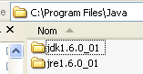
5.2. Eclipse
5.2.1. Grundlegende Installation
Eclipse ist unter der URL IDE verfügbar und kann unter der URL [http://www.eclipse.org/] heruntergeladen werden. Wir laden im Folgenden Eclipse 3.2.2 herunter:

Sobald die ZIP-Datei heruntergeladen ist, entpacken wir sie in einen Ordner auf der Festplatte:

Den Installationsordner von Eclipse, oben [C:\devjava\eclipse 3.2.2\eclipse], werden wir im Folgenden <eclipse> nennen. [eclipse.exe] ist die ausführbare Datei und [eclipse.ini] die dazugehörige Konfigurationsdatei. Sehen wir uns deren Inhalt an:
Diese Argumente werden beim Starten von Eclipse wie folgt verwendet:
Man erzielt dasselbe Ergebnis wie mit der .ini-Datei, indem man eine Verknüpfung erstellt, die Eclipse mit denselben Argumenten startet. Erläutern wir diese:
- -vmargs: Gibt an, dass die folgenden Argumente für die Java-Virtual-Machine bestimmt sind, auf der Eclipse ausgeführt wird. Eclipse ist eine Java-Anwendung.
- -Xms40m: ?
- -Xmx256m: Legt die Speichergröße in MB fest, die der Java-Virtual-Machine (JVM) zugewiesen wird, die Eclipse ausführt. Standardmäßig beträgt diese Größe 256 MB, wie hier gezeigt. Sofern der Rechner es zulässt, sind 512 MB vorzuziehen.
Diese Argumente werden an die JVM übergeben, die Eclipse ausführt. Die JVM wird durch eine Datei namens [java.exe] oder [javaw.exe] repräsentiert. Wie wird diese Datei gefunden? Tatsächlich wird auf verschiedene Arten danach gesucht:
- in der Datei PATH der Datei OS
- im Verzeichnis <JAVA_HOME>/jre/bin, wobei JAVA_HOME eine Systemvariable ist, die das Stammverzeichnis eines JDK definiert.
- an einen Speicherort, der als Argument an Eclipse in der Form -vm <Pfad>\javaw.exe übergeben wird
Die letztgenannte Lösung ist vorzuziehen, da die beiden anderen anfällig für Unwägbarkeiten bei späteren Anwendungsinstallationen sind, die entweder den Pfad PATH des Verzeichnisses OS oder die Systemvariable JAVA_HOME ändern können.
Wir erstellen daher die folgende Verknüpfung:

<eclipse>\eclipse.exe" -vm "C:\Program Files\Java\jre1.6.0_01\bin\javaw.exe" -vmargs -Xms40m -Xmx512m | |
Eclipse-Installationsordner <eclipse> |
Anschließend starten wir Eclipse über diese Verknüpfung. Es erscheint ein erstes Dialogfeld:

Ein [workspace] ist ein Arbeitsbereich. Übernehmen wir die vorgeschlagenen Standardwerte. Standardmäßig werden die erstellten Eclipse-Projekte in dem in diesem Dialogfeld angegebenen Ordner <workspace> gespeichert. Es gibt jedoch eine Möglichkeit, dieses Verhalten zu umgehen. Das werden wir systematisch tun. Daher ist die in diesem Dialogfeld gegebene Antwort nicht von Bedeutung.
Nach diesem Schritt wird die Eclipse-Entwicklungsumgebung angezeigt:
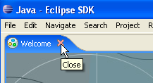
Wir schließen die Ansicht [Welcome] wie oben vorgeschlagen:

Bevor wir ein Java-Projekt erstellen, konfigurieren wir Eclipse so, dass die Ansicht JDK zum Kompilieren der Java-Projekte verwendet wird. Dazu wählen wir die Option [Window / Preferences / Java / Installed JREs ]:

Normalerweise sollte das JRE (Java Runtime Environment), das zum Starten von Eclipse selbst verwendet wurde, in der Liste der JRE enthalten sein. Dies ist normalerweise der einzige Eintrag. Über die Schaltfläche [Add] können weitere JRE hinzugefügt werden. Dazu muss das Stammverzeichnis des JRE angegeben werden. Die Schaltfläche „[Search]“ startet hingegen eine Suche nach „JREs“ auf der Festplatte. Dies ist eine gute Möglichkeit, um herauszufinden, wo sich die „JREs“-Dateien befinden, die man installiert und dann beim Wechsel zu einer neueren Version vergessen hat, zu deinstallieren. Oben ist das markierte JRE dasjenige, das zum Kompilieren und Ausführen der Java-Projekte verwendet wird. Es handelt sich um dasjenige, das in Abschnitt 5.1 installiert wurde und das auch zum Starten von Eclipse diente. Ein Doppelklick darauf öffnet die Eigenschaften:

Erstellen wir nun ein Java-Projekt „[File / New / Project]“:
 |  |
Wählen Sie „[Java Project]“ und anschließend „[Next]“ ->

In [2] geben wir einen leeren Ordner an, in dem das Java-Projekt installiert werden soll. In [1] vergeben wir einen Namen für das Projekt. Er muss nicht unbedingt den Namen des Ordners tragen, wie das obige Beispiel vermuten lassen könnte. Anschließend klicken wir auf die Schaltfläche [Next], um zur nächsten Seite des Erstellungsassistenten zu gelangen:

Oben erstellen wir einen speziellen Ordner im Projekt, um dort die Quelldateien (.java) abzulegen:

 |
- In [1] sehen wir den Ordner [src], in dem die .java-Quelldateien abgelegt werden
- In [2] sehen wir den Ordner [bin], in dem die kompilierten .class-Dateien abgelegt werden
Wir schließen den Assistenten mit [Finish] ab. Damit haben wir ein Java-Projektrahmenwerk:
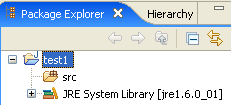
Klicken wir mit der rechten Maustaste auf das Projekt [test1], um eine Java-Klasse zu erstellen:

 |
- in [1], dem Ordner, in dem die Klasse erstellt wird. Eclipse schlägt standardmäßig den Ordner des aktuellen Projekts vor.
- in [2], das Paket, in dem die Klasse abgelegt wird
- in [3] den Namen der Klasse
- in [4] legen wir fest, dass die statische Methode [main] generiert werden soll
Wir bestätigen den Assistenten mit [Finish]. Das Projekt wird daraufhin um eine Klasse erweitert:
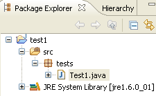
Eclipse hat das Gerüst der Klasse generiert. Dieses wird durch einen Doppelklick auf das oben genannte [Test1.java] aufgerufen:

Wir ändern den obigen Code wie folgt:

Wir führen das Programm [Test1.java] aus: [clic droit sur Test1.java -> Run As -> Java Application]

Das Ergebnis der Ausführung wird im Fenster [Console] angezeigt:

Das Fenster [Console] sollte standardmäßig angezeigt werden. Sollte dies nicht der Fall sein, kann die Anzeige über [Window/Show View/Console] angefordert werden:

5.2.2. Auswahl des Compilers
Eclipse ermöglicht die Generierung von Code, der mit Java 1.4, Java 1.5 und Java 1.6 kompatibel ist. Standardmäßig ist es so konfiguriert, dass Code generiert wird, der mit Java 1.4 kompatibel ist. Die Befehle API und JPA erfordern Java 1.5-Code. Wir ändern die Art des von [Window / Preferences / Java / Compiler] generierten Codes:
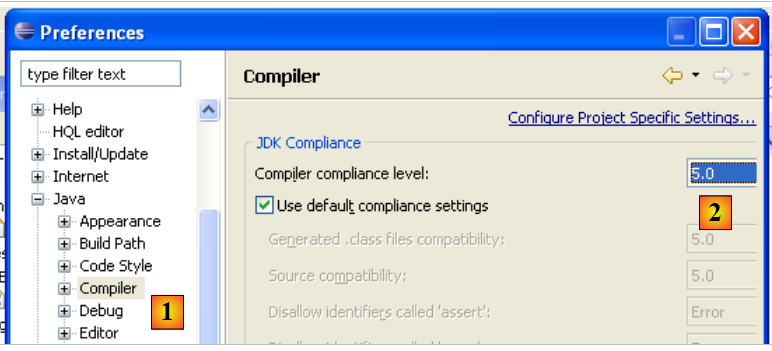 |
- in [1]: Auswahl der Option [Java / Compiler]
- in [2]: Auswahl der Java-5.0-Kompatibilität
5.2.3. Installation der Callisto-Plugins für „ “
Mit der oben installierten Basisversion lassen sich Java-Konsolenanwendungen erstellen, jedoch keine Java-Web- oder Swing-Anwendungen – oder man muss alles selbst umsetzen. Wir werden nun verschiedene Plugins installieren:
Gehen wir wie folgt vor: [Help/Software Udates/Find and Install]:
 |
- In [2] geben wir an, dass wir neue Plugins installieren möchten
 |
- In [3] gibt man die Websites an, die durchsucht werden sollen, um die Plugins zu finden
- In [4] werden die gewünschten Plugins markiert
 |
- In [5] weist Eclipse darauf hin, dass ein Plugin ausgewählt wurde, das von anderen Plugins abhängt, die nicht ausgewählt wurden
- In [6] nutzt man die Schaltfläche [Select Required], um die fehlenden Plugins automatisch auszuwählen
- in [7], akzeptiert man die Lizenzbedingungen dieser verschiedenen Plugins
 |
- In [8] wird eine Liste aller Plugins angezeigt, die installiert werden sollen
- In [9] wird der Download dieser Plugins gestartet
- In [10] werden diese Plugins nach dem Herunterladen alle installiert, ohne ihre Signatur zu überprüfen
 |
- In [11] lässt man Eclipse nach Abschluss der Plugin-Installation neu starten
- in [12]: Wenn man nun [File/New/Project] ausführt, stellt man fest, dass man nun Webanwendungen erstellen kann, was zuvor nicht möglich war.
5.2.4. Installation des Plugins [TestNG]
TestNG (Test Next Generation) ist ein Tool für Unit-Tests, das vom Konzept her JUnit ähnelt. Es bietet jedoch Verbesserungen, weshalb wir es hier JUnit vorziehen. Wir gehen wie zuvor vor: [Help/Software Udates/Find and Install]:
 |
- In [2] wird angegeben, dass neue Plugins installiert werden sollen
 |
- In [3a] ist die Download-Seite von [TestNG] nicht vorhanden. Wir fügen sie mit [3b] hinzu
- in [4b]: Die Seite des Plugins lautet [http://beust.com/eclipse]. In [4a] kann man beliebige Angaben machen.
 |
- In [5a] wird das Plugin [TestNG] für die Aktualisierung ausgewählt. In [5b] wird die Aktualisierung gestartet.
- In [6] wurde die Verbindung zur Plugin-Website hergestellt. Uns werden alle auf der Website verfügbaren Plugins angezeigt. Hier wählen wir ein einziges aus, bevor wir zum nächsten Schritt übergehen.
 |
- In [7] akzeptieren wir die Lizenzbedingungen des Plugins
- In [8] wird eine Liste aller Plugins angezeigt, die installiert werden sollen – hier eines. Wir starten den Download. Anschließend läuft alles wie oben für die Callisto-Plugins beschrieben ab.
Nach dem Neustart von Eclipse kann man das Vorhandensein des neuen Plugins überprüfen, indem man beispielsweise die verfügbaren Ansichten aufruft [Window / show View / Other]:
 |
Wie oben zu sehen ist, gibt es nun eine Ansicht „[TestNG]“, die zuvor nicht vorhanden war.
5.2.5. Installation des Plugins [Hibernate Tools]
Hibernate ist ein Anbieter JPA, und das Plugin [Hibernate Tools] für Eclipse ist bei der Entwicklung von Anwendungen JPA hilfreich. Im Mai 2007 ermöglicht nur die neueste Version (3.2.0beta9) die Arbeit mit Hibernate/JPA, und diese ist über den soeben beschriebenen Mechanismus nicht verfügbar. Nur ältere Versionen sind verfügbar. Wir werden daher anders vorgehen.
Das Plugin ist auf der Website von Hibernate Tools verfügbar: http://tools.hibernate.org/.
 |
- in [1], wählen wir die neueste Version von Hibernate Tools
- in [2], und laden sie herunter
 |
- in [3]: Entpacken Sie die heruntergeladene ZIP-Datei mit einem Entpacker in den Ordner <eclipse> (Eclipse sollte dabei möglichst nicht aktiv sein)
- in [4], man akzeptiert, dass dabei einige Dateien überschrieben werden
Starten Sie Eclipse neu:
 |
- In [1]: Man öffnet eine Perspektive
- in [2]: Es gibt nun eine Perspektive [Hibernate Console]
Wir werden mit dem Plugin [Hibernate Tools] nicht weitermachen (Cancel in [2]). Seine Verwendung wird in den Beispielen des Tutorials erklärt.
Manchmal erkennt Eclipse neue Plugins nicht. Mit der Option -clean kann man das Programm dazu zwingen, alle Plugins erneut zu scannen. Die ausführbare Datei der Eclipse-Verknüpfung würde dann wie folgt geändert:
"<eclipse>\eclipse.exe" -clean -vm "C:\Program Files\Java\jre1.6.0_01\bin\javaw.exe" -vmargs -Xms40m -Xmx512m
Sobald die neuen Plugins von Eclipse erkannt wurden, wird die oben genannte Option -clean entfernt.
5.2.6. Installation des Plugins [SQL Explorer]
Wir werden nun ein Plugin installieren, mit dem wir den Inhalt einer Datenbank direkt aus Eclipse heraus durchsuchen können. Die für Eclipse verfügbaren Plugins finden Sie auf der Website [http://eclipse-plugins.2y.net/eclipse/plugins.jsp]:
 |
- unter [1]: die Website für Eclipse-Plugins
- unter [2]: Wählen Sie die Kategorie [Database]
- unter [3]: In der Kategorie [Database] die Sortierung nach Bewertung wählen (angesichts der geringen Anzahl an Abstimmenden wenig zuverlässig)
- in [4]: QuantumDB steht an erster Stelle
- in [5]: Wir entscheiden uns für SQLExplorer, das älter ist, schlechter bewertet (Platz 3), aber dennoch sehr gut. Wir gehen auf die Website des Plugins [plugin-homepage]
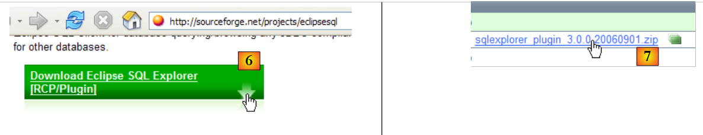 |
- bei [6] und [7]: Wir laden das Plugin herunter.
 |
- sowie [8]: Entpacken Sie die ZIP-Datei des Plugins in den Eclipse-Ordner.
Zur Überprüfung starten Sie Eclipse erneut, gegebenenfalls mit der Option -clean:
 |
- in [1]: Öffnen Sie eine neue Perspektive
- in [2]: Man sieht, dass eine Perspektive [SQL Explorer] verfügbar ist. Darauf kommen wir später zurück.
5.3. Der Servlet-Container „ “ in Tomcat 5.5
5.3.1. Installation
Um Servlets auszuführen, benötigen wir einen Servlet-Container. Wir stellen hier einen davon vor, Tomcat 5.5, der unter der URL http://tomcat.apache.org/ verfügbar ist. Wir beschreiben die Vorgehensweise (Stand: Mai 2007) für die Installation. Falls bereits eine frühere Version von Tomcat installiert ist, sollte diese zuvor deinstalliert werden.

Um das Produkt herunterzuladen, folgen Sie dem obigen Link [Tomcat 5.x]:

Wählen Sie die .exe-Datei für die Windows-Plattform aus. Sobald diese heruntergeladen ist, starten Sie die Installation von Tomcat durch einen Doppelklick darauf:
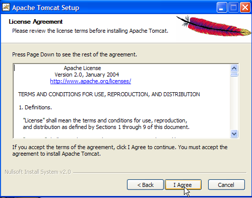
Man akzeptiert die Lizenzbedingungen ->

Führen Sie [next] aus ->

Den vorgeschlagenen Installationsordner akzeptieren oder mit [Browse] ändern ->

Legen Sie den Benutzernamen und das Passwort des Tomcat-Server-Administrators fest. Hier wurde [admin / admin] eingegeben ->
 |
Tomcat 5.x benötigt ein JRE 1.5. Normalerweise sollte es die auf Ihrem Rechner installierte Version finden. Oben ist der Pfad zu dem in Abschnitt 5.1 heruntergeladenen JRE 1.6 angegeben. Falls kein JRE gefunden wird, geben Sie dessen Stammverzeichnis über die Schaltfläche [1] an. Anschließend verwenden Sie die Schaltfläche [Install], um Tomcat 5.x zu installieren ->

Die Schaltfläche „[Finish]“ schließt die Installation ab. Die Installation von Tomcat wird durch ein Symbol rechts in der Windows-Taskleiste angezeigt:

Ein Rechtsklick auf dieses Symbol ermöglicht den Zugriff auf die Befehle zum Starten und Beenden des Servers:

Wir verwenden die Option [Stop service], um den Webserver jetzt anzuhalten:

Beachten Sie die Statusänderung des Symbols. Dieses kann aus der Taskleiste entfernt werden:

Die Installation von Tomcat erfolgte in dem vom Benutzer gewählten Ordner, den wir fortan <tomcat> nennen werden. Die Verzeichnisstruktur dieses Ordners für die heruntergeladene Tomcat-Version 5.5.23 sieht wie folgt aus:

Durch die Installation von Tomcat wurden einige Verknüpfungen im Menü [Démarrer] angelegt. Wir verwenden den unten stehenden Link [Monitor], um das Tool zum Stoppen und Starten von Tomcat zu starten:

Dort finden wir dann das zuvor gezeigte Symbol wieder:
Der Tomcat-Monitor kann durch einen Doppelklick auf dieses Symbol aktiviert werden:

Mit den Schaltflächen [Start - Stop - Pause] – „Restart“ können wir den Server starten, stoppen und neu starten. Wir starten den Server über [Start] und rufen anschließend mit einem Browser die URL http://localhost:8080 auf. Es sollte eine Seite ähnlich der folgenden angezeigt werden:

Über die folgenden Links können Sie überprüfen, ob Tomcat korrekt installiert wurde:

Alle Links auf der Seite [http://localhost:8080] sind interessant, und der Leser ist eingeladen, sie zu erkunden. Wir werden später noch auf die Links zurückkommen, mit denen sich die auf dem Server bereitgestellten Webanwendungen verwalten lassen:

5.3.2. Bereitstellung einer Webanwendung auf dem Tomcat-Server
5.3.3. Bereitstellung
Eine Webanwendung muss bestimmte Regeln erfüllen, um in einem Servlet-Container bereitgestellt werden zu können. Sei <webapp> der Ordner einer Webanwendung. Eine Webanwendung besteht aus:
im Ordner <webapp>\WEB-INF\classes | |
im Ordner <webapp>\WEB-INF\lib | |
im Ordner <webapp> oder in Unterordnern |
Die Webanwendung wird über eine Datei XML konfiguriert: <webapp>\WEB-INF\web.xml. Diese Datei ist in einfachen Fällen nicht erforderlich, insbesondere wenn die Webanwendung nur statische Dateien enthält. Erstellen wir die folgende Datei „HTML“:
<html>
<head>
<title>Application exemple</title>
</head>
<body>
Application exemple active ....
</body>
</html>
und speichern wir es in einem Ordner:

Wenn man diese Datei in einem Browser lädt, erhält man die folgende Seite:

Die vom Browser angezeigte Datei „URL“ zeigt, dass die Seite nicht von einem Webserver bereitgestellt, sondern direkt vom Browser geladen wurde. Wir möchten nun, dass sie über den Tomcat-Webserver verfügbar ist.
Kehren wir zur Verzeichnisstruktur von <tomcat> zurück:
Die Konfiguration der auf dem Tomcat-Server bereitgestellten Webanwendungen erfolgt mithilfe von XML-Dateien, die sich im Ordner [<tomcat>\conf\Catalina\localhost] befinden:
 |  |
Diese XML-Dateien können manuell erstellt werden, da ihre Struktur einfach ist. Anstatt diesen Ansatz zu wählen, werden wir jedoch die von Tomcat bereitgestellten Web-Tools nutzen.
5.3.4. -Verwaltung von Tomcat
Auf der Startseite http://localhost:8080 bietet der Server Links zur Verwaltung an:

Über den Link [Tomcat Administration] können wir die Ressourcen konfigurieren, die Tomcat den darin bereitgestellten Webanwendungen zur Verfügung stellt, beispielsweise einen Verbindungspool zu einer Datenbank. Folgen wir dem Link:
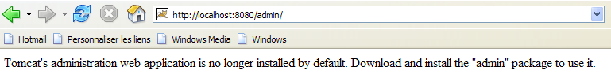
Die angezeigte Seite weist darauf hin, dass für die Verwaltung von Tomcat 5.x ein spezielles Paket namens „admin“ erforderlich ist. Kehren wir zur Tomcat-Website [http://tomcat.apache.org/download-55.cgi] zurück:

Laden wir die ZIP-Datei mit der Bezeichnung [Administration Web Application] herunter und entpacken sie anschließend. Ihr Inhalt sieht wie folgt aus:

Der Ordner „[admin]“ muss in den Ordner „[<tomcat>\server\webapps]“ kopiert werden, wobei <tomcat> der Ordner ist, in dem Tomcat 5.x installiert wurde:

Der Ordner „[localhost]“ enthält eine Datei namens „[admin.xml]“, die in den Ordner „[<tomcat>\conf\Catalina\localhost]“ kopiert werden muss:
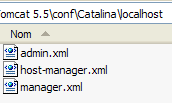
Beenden wir Tomcat und starten wir ihn neu, falls er aktiv war. Rufen wir anschließend mit einem Browser die Startseite des Webservers erneut auf:

Folgen wir dem Link [Tomcat Administration]. Wir gelangen auf eine Anmeldeseite (um diese aufzurufen, muss die Seite möglicherweise neu geladen werden):
 |  |
Hier müssen wir die Daten eingeben, die wir bei der Installation von Tomcat angegeben haben. In unserem Fall geben wir das Paar „admin / admin“ ein. Die Schaltfläche [Login] führt uns zur folgenden Seite:

Auf dieser Seite kann der Tomcat-Administrator
- Datenquellen (Data Sources) festzulegen sowie
- die für den E-Mail-Versand erforderlichen Informationen (Mail Sessions)
- Umgebungsdaten festzulegen, auf die alle Anwendungen zugreifen können (Environment Entries),
- die Benutzer/Administratoren von Tomcat zu verwalten (Users),
- Benutzergruppen (Groups) zu verwalten,
- Rollen zu definieren (= was ein Benutzer tun darf und was nicht),
- die Eigenschaften der vom Server bereitgestellten Webanwendungen festzulegen (Service Catalina)
Folgen wir dem obigen Link [Roles]:

Mit einer Rolle lässt sich festlegen, was ein Benutzer oder eine Benutzergruppe tun darf und was nicht. Einer Rolle werden bestimmte Rechte zugewiesen. Jeder Benutzer ist einer oder mehreren Rollen zugeordnet und verfügt über die entsprechenden Rechte. Die unten aufgeführte Rolle [manager] gewährt das Recht, die in Tomcat bereitgestellten Webanwendungen zu verwalten (Bereitstellung, Starten, Beenden, Entladen). Wir werden einen Benutzer mit dem Namen [manager] anlegen, den wir der Rolle [manager] zuweisen, damit er die Tomcat-Anwendungen verwalten kann. Dazu folgen wir dem Link [Users] auf der Verwaltungsseite:

Wir sehen, dass bereits eine Reihe von Benutzern vorhanden ist. Wir verwenden die Option [Create New User], um einen neuen Benutzer anzulegen:

Wir vergeben für den Benutzer „manager“ das Passwort „manager“ und weisen ihm die Rolle „manager“ zu. Mit der Schaltfläche [Save] bestätigen wir diesen Eintrag. Der neue Benutzer erscheint in der Benutzerliste:

Dieser neue Benutzer wird in die Datei [<tomcat>\conf\tomcat-users.xml] aufgenommen:

deren Inhalt wie folgt lautet:
<?xml version='1.0' encoding='utf-8'?>
<tomcat-users>
<role rolename="tomcat"/>
<role rolename="role1"/>
<role rolename="manager"/>
<role rolename="admin"/>
<user username="tomcat" password="tomcat" roles="tomcat"/>
<user username="role1" password="tomcat" roles="role1"/>
<user username="both" password="tomcat" roles="tomcat,role1"/>
<user username="manager" password="manager" fullName="" roles="manager"/>
<user username="admin" password="admin" roles="admin,manager"/>
</tomcat-users>
- Zeile 10: Der Benutzer [manager], der angelegt wurde
Eine weitere Möglichkeit, Benutzer hinzuzufügen, besteht darin, diese Datei direkt zu bearbeiten. Dies ist insbesondere dann erforderlich, wenn man versehentlich das Passwort des Administrators „admin“ oder des Managers vergessen hat.
5.3.5. Verwaltung der bereitgestellten Webanwendungen
Kehren wir nun zur Startseite [http://localhost:8080] zurück und folgen wir dem Link [Tomcat Manager]:

Wir gelangen nun zu einer Anmeldeseite. Wir melden uns als „manager / manager“, c.a.d, an – dem Benutzer mit der Rolle [manager], den wir gerade angelegt haben. Denn nur ein Benutzer mit dieser Rolle kann diesen Link nutzen. In Zeile 11 von [tomcat-users.xml] sehen wir, dass der Benutzer [admin] ebenfalls die Rolle [manager] hat. Wir könnten daher auch die Authentifizierung [admin / admin] verwenden.

Wir erhalten eine Seite, auf der die derzeit in Tomcat bereitgestellten Anwendungen aufgelistet sind:

Über die Formulare am Ende der Seite können wir eine neue Anwendung hinzufügen:

Hier möchten wir die zuvor erstellte Beispielanwendung in Tomcat bereitstellen. Dazu gehen wir wie folgt vor:
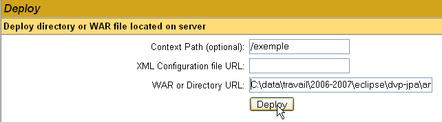
/Beispiel | der Name, der zur Bezeichnung der Webanwendung , die bereitgestellt werden soll | |
C:\data\arbeit\2006-2007\eclipse\dvp-jpa\Anhänge\tomcat\Beispiel | der Ordner der Webanwendung |
Um die Datei [C:\data\travail\2006-2007\eclipse\dvp-jpa\annexes\tomcat\exemple\exemple.html] zu erhalten, fordern wir von Tomcat die Dateien URL und [http://localhost:8080/exemple/exemple.html] an. Der Kontext dient dazu, dem Stammverzeichnis der bereitgestellten Webanwendung einen Namen zu geben. Wir verwenden die Schaltfläche [Deploy], um die Anwendung bereitzustellen. Wenn alles gut läuft, erhalten wir die folgende Antwortseite:

und die neue Anwendung erscheint in der Liste der bereitgestellten Anwendungen:
 |
Erläutern wir die Zeile im obigen Kontext /Beispiel:
Link zu http://localhost:8080/exemple | |
ermöglicht das Starten der Anwendung | |
ermöglicht das Beenden der Anwendung | |
ermöglicht das Neuladen der Anwendung. Dies ist beispielsweise erforderlich, wenn bestimmte Klassen der Anwendung hinzugefügt, bestimmte Klassen zur Anwendung hinzugefügt, geändert oder gelöscht wurden. | |
Löschen des Kontexts [/exemple]. Die Anwendung verschwindet aus der Liste der verfügbaren Anwendungen. |
Nachdem unsere Beispielanwendung nun bereitgestellt ist, können wir einige Tests durchführen. Wir rufen die Seite [exemple.html] über die URL [http://localhost:8080/exemple/vues/exemple.html] auf:

Eine weitere Möglichkeit, eine Webanwendung auf dem Tomcat-Server bereitzustellen, besteht darin, die Angaben, die wir über die Weboberfläche gemacht haben, in einer Datei namens [contexte].xml im Ordner [<tomcat>\conf\Catalina\localhost] zu hinterlegen, wobei [contexte] der Name der Webanwendung ist.
Kehren wir zur Tomcat-Verwaltungsoberfläche zurück:

Löschen wir die Anwendung „[/exemple]“ zusammen mit ihrem Link „[Undeploy]“:

Die Anwendung [/exemple] ist nicht mehr in der Liste der aktiven Anwendungen enthalten. Definieren wir nun die folgende Datei [exemple.xml]:
Die Datei XML besteht aus einem einzigen <Context>-Tag, dessen Attribut docBase den Ordner definiert, der die bereitzustellende Webanwendung enthält. Speichern wir diese Datei unter <tomcat>\conf\Catalina\localhost:

Beenden wir Tomcat bei Bedarf und starten wir es neu, um anschließend die Liste der aktiven Anwendungen mit dem Tomcat-Administrator anzuzeigen:

Die Anwendung [/exemple] ist tatsächlich vorhanden. Rufen wir nun mit einem Browser die URL auf:
[http://localhost:8080/exemple/exemple.html] auf:

Eine so bereitgestellte Webanwendung kann auf die gleiche Weise wie zuvor über den Link [Undeploy] aus der Liste der bereitgestellten Anwendungen entfernt werden:
In diesem Fall wird die Datei [exemple.xml] automatisch aus dem Ordner [<tomcat>\conf\Catalina\localhost] gelöscht.
Um eine Webanwendung in Tomcat bereitzustellen, kann man schließlich auch deren Kontext in der Datei [<tomcat>\conf\server.xml] definieren. Auf diesen Punkt werden wir hier nicht näher eingehen.
5.3.6. Webanwendung mit Startseite
Wenn wir die URL „[http://localhost:8080/exemple/]“ aufrufen, erhalten wir folgende Antwort:

Bei einigen früheren Versionen von Tomcat hätten wir den Inhalt des physischen Ordners der Anwendung [/exemple] erhalten.
Man kann es so einrichten, dass bei Aufruf des Kontexts eine sogenannte Startseite angezeigt wird. Dazu erstellen wir eine Datei mit dem Namen [web.xml] und legen sie im Ordner <Beispiel>\WEB-INF ab, wobei <Beispiel> der physische Ordner der Webanwendung [/exemple] ist. Diese Datei hat folgenden Inhalt:
- Zeilen 2–5: das Stamm-Tag <web-app> mit Attributen, die durch Kopieren und Einfügen aus der Datei [web.xml] der Tomcat-Anwendung [/admin] (<tomcat>/server/webapps/admin/WEB-INF/web.xml).
- Zeile 7: Der Anzeigename der Webanwendung. Dies ist ein frei wählbarer Name, der weniger Einschränkungen unterliegt als der Kontextname der Anwendung. Man kann dort beispielsweise Leerzeichen verwenden, was beim Kontextnamen nicht möglich ist. Dieser Name wird beispielsweise vom Tomcat-Administrator angezeigt:

- Zeile 8: Beschreibung der Webanwendung. Dieser Text kann anschließend programmgesteuert abgerufen werden.
- Zeilen 9–11: Die Liste der Startdateien. Das Tag <welcome-file-list> dient dazu, die Liste der Ansichten zu definieren, die angezeigt werden sollen, wenn ein Client den Anwendungskontext anfordert. Es können mehrere Ansichten vorhanden sein. Die erste gefundene Ansicht wird dem Client angezeigt. Hier haben wir nur eine: [/exemple.html]. Wenn also ein Client die URL [/exemple] anfordert, wird ihm tatsächlich die URL [/exemple/exemple.html] bereitgestellt.
Speichern wir diese Datei [web.xml] unter <Beispiel>\WEB-INF:

Wenn Tomcat noch aktiv ist, kann man es dazu zwingen, die Webanwendung [/exemple] über den Link [Recharger] neu zu laden:

Bei diesem „Neuladen“ liest Tomcat die in [<exemple>\WEB-INF] enthaltene Datei [web.xml] erneut ein, sofern diese vorhanden ist. Dies ist hier der Fall. Sollte Tomcat beendet sein, starten Sie ihn neu.
Rufen wir nun mit einem Browser die Datei URL aus [http://localhost:8080/exemple/] auf:

Der Mechanismus der Host-Dateien hat funktioniert.
5.3.7. Integration von Tomcat in Eclipse
Wir werden nun Tomcat in Eclipse integrieren. Diese Integration ermöglicht es,
- Tomcat direkt aus Eclipse heraus zu starten und zu beenden
- Java-Webanwendungen zu entwickeln und auf Tomcat auszuführen. Die Eclipse-/Tomcat-Integration ermöglicht es, die Ausführung der Anwendung zu verfolgen (zu debuggen), einschließlich der Ausführung der von Tomcat ausgeführten Java-Klassen (Servlets).
Starten wir Eclipse und rufen wir die Ansicht [Servers] auf:
 |
- in [1]: „Window/Show View/Other“
- in [2]: Wählen Sie die Ansicht [Servers] aus und führen Sie [OK] aus
 |
- in [1] gibt es eine neue Ansicht [Servers]
- in [2], klicken Sie mit der rechten Maustaste auf die Ansicht und fordern Sie die Erstellung eines neuen Servers [New/Server] an
- in [3] wählt man den Server [Tomcat 5.5] aus und führt dann [Next] aus
 |
- in [4], geben Sie den Installationsordner von Tomcat 5.5 an
- Bei [5] geben wir an, dass derzeit keine Eclipse-/Tomcat-Projekte vorhanden sind. Wir führen [Finish] aus
Das Hinzufügen des Servers erfolgt durch das Hinzufügen eines Ordners im Eclipse-Projekt-Explorer [6] und das Erscheinen eines Servers in der Ansicht [servers] [7]:
 |
In der Ansicht [Servers] werden alle registrierten Server angezeigt, hier lediglich der Tomcat-5.5-Server, den wir soeben registriert haben. Ein Rechtsklick darauf eröffnet den Zugriff auf die Befehle zum Starten, Beenden und Neustarten des Servers:

Oben starten wir den Server. Beim Start werden eine Reihe von Protokollen in die Ansicht [Console] geschrieben:
Das Verständnis dieser Protokolle erfordert etwas Übung. Wir werden vorerst nicht näher darauf eingehen. Es ist jedoch wichtig zu überprüfen, ob sie keine Fehler beim Laden von Kontexten melden. Tatsächlich versucht der Tomcat-/Eclipse-Server beim Start, die Kontexte der von ihm verwalteten Anwendungen zu laden. Das Laden des Kontexts einer Anwendung beinhaltet das Auswerten ihrer Datei [web.xml] und das Laden einer oder mehrerer Klassen, die diesen initialisieren. Dabei können verschiedene Arten von Fehlern auftreten:
- Die Datei „[web.xml]“ weist syntaktische Fehler auf. Dies ist der häufigste Fehler. Es wird empfohlen, ein Tool zu verwenden, das die Gültigkeit eines XML-Dokuments bereits bei dessen Erstellung überprüfen kann.
- Bestimmte zu ladende Klassen wurden nicht gefunden. Diese werden in den Dateien „[WEB-INF/classes]“ und „[WEB-INF/lib]“ gesucht. In der Regel muss überprüft werden, ob die erforderlichen Klassen vorhanden sind und ob die in der Datei „[web.xml]“ deklarierten Klassen korrekt geschrieben sind.
Der über Eclipse gestartete Server hat nicht dieselbe Konfiguration wie der in Abschnitt 5.3 installierte. Um dies zu überprüfen, rufen wir die URL [http://localhost:8080] mit einem Browser auf:

Diese Antwort bedeutet nicht, dass der Server nicht funktioniert, sondern dass die angeforderte Ressource „/“ nicht verfügbar ist. Bei dem in Eclipse integrierten Tomcat-Server handelt es sich bei diesen Ressourcen um Webprojekte. Darauf werden wir später noch eingehen. Für den Moment beenden wir Tomcat:

Die bisherige Betriebsart kann geändert werden. Kehren wir zur Ansicht [Servers] zurück und doppelklicken wir auf den Tomcat-Server, um auf dessen Eigenschaften zuzugreifen:
 |  |
Das Kontrollkästchen [1] ist für den bisherigen Betriebsmodus verantwortlich. Wenn es aktiviert ist, werden die unter Eclipse entwickelten Webanwendungen nicht in den Konfigurationsdateien des zugehörigen Tomcat-Servers, sondern in separaten Konfigurationsdateien deklariert. Dadurch stehen die standardmäßig im Tomcat-Server definierten Anwendungen nicht zur Verfügung: [admin] und [manager], bei denen es sich um zwei nützliche Anwendungen handelt. Daher werden wir das Kontrollkästchen [1] deaktivieren und Tomcat neu starten:
 |  |
Anschließend rufen wir die URL [http://localhost:8080] mit einem Browser auf:

Wir sehen nun die in Abschnitt 5.3.4 beschriebene Funktionsweise.
In unseren vorherigen Beispielen haben wir einen Browser außerhalb von Eclipse verwendet. Man kann auch einen in Eclipse integrierten Browser verwenden:

Wir wählen oben den internen Browser aus. Um ihn aus Eclipse heraus zu starten, kann man das folgende Symbol verwenden:

Der tatsächlich gestartete Browser ist derjenige, der über die Option [Window -> Web Browser] ausgewählt wurde. In diesem Fall erhalten wir den internen Browser:
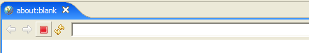
Starten wir bei Bedarf Tomcat aus Eclipse heraus und rufen wir in [1] die URL [http://localhost:8080] auf:
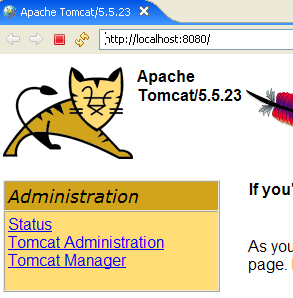
Folgen wir dem Link [Tomcat Manager]:

Das für den Zugriff auf die Anwendung [manager] erforderliche Paar [login / mot de passe] wird abgefragt. Entsprechend der zuvor vorgenommenen Tomcat-Konfiguration können wir [admin / admin] oder [manager / manager] eingeben. Daraufhin wird die Liste der bereitgestellten Anwendungen angezeigt:

5.4. SGBD Firebird
5.4.1. SGBD Firebird
Das SGBD Firebird ist unter der URL [http://www.firebirdsql.org/] verfügbar:
 |
- in [1]: Man verwendet die Option [Download.Firebird Relational Database]
- unter [2]: Hier wird die gewünschte Firebird-Version angegeben
- bei [3]: Die Installationsdatei wird heruntergeladen
Sobald die Datei [3] heruntergeladen ist, doppelklickt man darauf, um Firebird SGBD zu installieren. SGBD wird in einem Ordner installiert, dessen Inhalt in etwa wie folgt aussieht:

Die Binärdateien befinden sich im Ordner [bin]:

ermöglicht das Starten/Beenden von SGBD | |
ein Client-Programm zur Verwaltung von Datenbanken |
Es ist zu beachten, dass der Administrator von SGBD standardmäßig [SYSDBA] heißt und sein Passwort [masterkey] lautet. In [Démarrer] wurden Menüs eingerichtet:
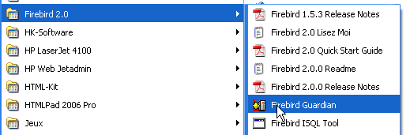
Mit der Option [Firebird Guardian] kann SGBD gestartet bzw. beendet werden. Nach dem Start bleibt das Symbol von SGBD in der Windows-Taskleiste:
 |
Um Firebird-Datenbanken mit dem Befehlszeilen-Client [isql.exe] anzulegen und zu verwalten, muss die mit dem Produkt gelieferte Dokumentation gelesen werden, die über Firebird-Verknüpfungen in [Démarrer/Programmes/Firebird 2.0] zugänglich ist.
Eine schnelle Möglichkeit, mit Firebird zu arbeiten und die Sprache SQL zu erlernen, ist die Verwendung eines grafischen Clients. Ein solcher Client ist IB-Expert, der im folgenden Absatz beschrieben wird.
5.4.2. Arbeiten mit Firebird SGBD mit IB- Expert
Die Hauptwebsite von IB-Expert ist [http://www.ibexpert.com/].
 |
 |
- Bei [1] wählt man IBExpert aus
- Bei [2] wählt man den Download aus, nachdem man gegebenenfalls die gewünschte Sprache ausgewählt hat
- Bei [3] wählt man die sogenannte „persönliche“ Version aus, da diese kostenlos ist. Man muss sich jedoch auf der Website registrieren.
- Bei [4] laden Sie IBExpert herunter
IBExpert wird in einem Ordner installiert, der dem folgenden ähnelt:

Die ausführbare Datei heißt [ibexpert.exe]. Normalerweise ist im Menü [Démarrer] eine Verknüpfung vorhanden:

Nach dem Start zeigt IBExpert das folgende Fenster an:

Verwenden wir die Option [Database/Create Database] „ “, um eine Datenbank anzulegen:
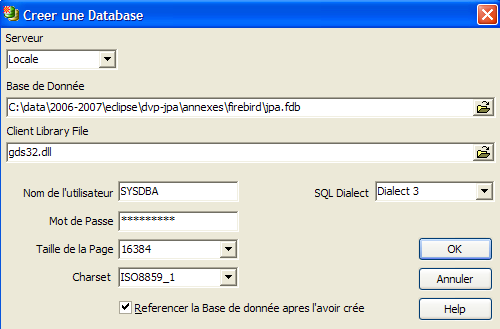
könnte [local] oder [remote] sein. Hier befindet sich unser Server auf demselben Rechner wie [IBExpert]. Wir wählen also [local] | |
die Schaltfläche vom Typ [dossier] aus der Combobox, um die Datenbankdatei auszuwählen. Firebird fasst die gesamte Datenbank in eine einzige Datei. Das ist einer ihrer Vorteile. Die Datenbank lässt sich durch einfaches Kopieren der Datei von einem Rechner auf einen anderen übertragen. Die Endung [.fdb] wird automatisch hinzugefügt. | |
SYSDBA ist der Standardadministrator der aktuellen Firebird-Distributionen | |
„masterkey“ ist das Passwort des Administrators SYSDBA der aktuellen Firebird-Distributionen | |
Der zu verwendende Dialekt SQL | |
Wenn das Kontrollkästchen aktiviert ist, zeigt IBExpert nach dem Anlegen der Datenbank einen Link zu dieser an |
Wenn Sie auf die Schaltfläche „Erstellen“ ([OK]) klicken, erhalten Sie folgende Warnmeldung:

dann haben Sie Firebird nicht gestartet. Starten Sie es. Es erscheint ein neues Fenster:

Zu verwendende Schriftart. Es wird empfohlen, in der Dropdown-Liste die Schriftart [ISO-8859-1] auszuwählen, da diese die Verwendung von lateinischen Zeichen mit Akzenten ermöglicht. |
[IBExpert] kann verschiedene von Interbase abgeleitete SGBD-Varianten verarbeiten. Wählen Sie die von Ihnen installierte Firebird-Version aus. |
Sobald dieses neue Fenster von [Register] bestätigt wurde, erscheint das Ergebnis [1] im Fenster [Database Explorer]. Dieses Fenster kann versehentlich geschlossen werden. Um es erneut aufzurufen, führen Sie [2] aus:
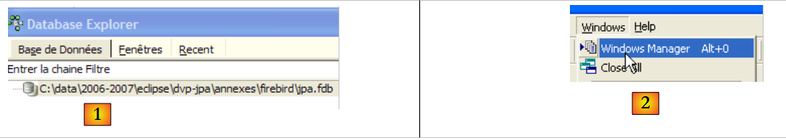 |
Um auf die erstellte Datenbank zuzugreifen, genügt ein Doppelklick auf den entsprechenden Link. IBExpert zeigt dann eine Baumstruktur an, über die Sie auf die Eigenschaften der Datenbank zugreifen können:

5.4.3. Erstellen einer Datentabelle
Erstellen wir eine Tabelle. Klicken Sie mit der rechten Maustaste auf [Tables] (siehe Fenster oben) und wählen Sie die Option [New Table]. Es erscheint das Fenster zur Definition der Tabelleneigenschaften:
 |
Beginnen wir damit, der Tabelle den Namen [ARTICLES] zu geben, indem wir das Eingabefeld [1] verwenden:

Verwenden wir das Eingabefeld [2], um einen Primärschlüssel [ID] zu definieren:

Ein Feld wird durch einen Doppelklick auf das Feld [PK] (Primärschlüssel) als Primärschlüssel festgelegt. Fügen wir über die Schaltfläche oberhalb von [3] weitere Felder hinzu:

Solange wir unsere Definition nicht „kompiliert“ haben, wird die Tabelle nicht angelegt. Verwenden wir die Schaltfläche [Compile] oben, um die Definition der Tabelle abzuschließen. IBExpert bereitet die Abfragen SQL zur Erstellung der Tabelle vor und fordert eine Bestätigung an:

Interessanterweise zeigt IBExpert die Abfragen SQL an, die es ausgeführt hat. Dies ermöglicht das Erlernen sowohl der Sprache SQL als auch des möglicherweise verwendeten proprietären Dialekts SQL. Mit der Schaltfläche [Commit] kann die laufende Transaktion bestätigt werden, mit [Rollback] kann sie abgebrochen werden. Hier wird sie mit [Commit] akzeptiert. Anschließend fügt IBExpert die erstellte Tabelle zur Struktur unserer Datenbank hinzu:

Durch einen Doppelklick auf die Tabelle gelangt man zu deren Eigenschaften:
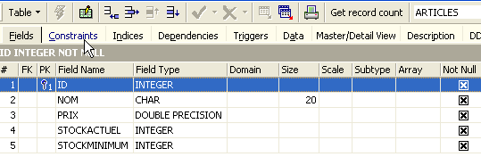
Über das Fenster [Constraints] können wir der Tabelle neue Integritätsbeschränkungen hinzufügen. Öffnen wir es:

Hier finden wir die von uns erstellte Primärschlüssel-Einschränkung wieder. Wir können weitere Einschränkungen hinzufügen:
- Fremdschlüssel [Foreign Keys]
- Feldintegritätsbeschränkungen [Checks]
- Eindeutigkeitsbeschränkungen für Felder [Uniques]
Beachten Sie bitte:
- die Felder [ID, PRIX, STOCKACTUEL, STOKMINIMUM] müssen >0 sein
- das Feld [NOM] darf nicht leer und muss eindeutig sein
Öffnen wir das Fenster [Checks] und klicken wir mit der rechten Maustaste in den Bereich zur Definition der Einschränkungen, um eine neue Einschränkung hinzuzufügen:

Legen wir die gewünschten Einschränkungen fest:

Beachten Sie oben, dass die Einschränkung [NOM<>''] zwei Apostrophe und keine Anführungszeichen verwendet. Kompilieren wir diese Einschränkungen mit der Schaltfläche [Compile] oben:

Auch hier zeigt IBExpert seine didaktische Seite, indem es die von ihm ausgeführten Abfragen SQL angibt. Wenden wir uns nun dem Feld [Constraints/Uniques] zu, um darauf hinzuweisen, dass der Name eindeutig sein muss. Das bedeutet, dass derselbe Name in der Tabelle nicht zweimal vorkommen darf.

Definieren wir die Einschränkung:

Anschließend kompilieren wir sie. Danach öffnen wir das Fenster [DDL] (Data Definition Language) der Tabelle [ARTICLES]:

Dieser enthält den Code SQL zur Generierung der Tabelle mit all ihren Einschränkungen. Man kann diesen Code in einem Skript speichern, um ihn später erneut auszuführen:
SET SQL DIALECT 3;
SET NAMES ISO8859_1;
CREATE TABLE ARTICLES (
ID INTEGER NOT NULL,
NOM VARCHAR(20) NOT NULL,
PRIX DOUBLE PRECISION NOT NULL,
STOCKACTUEL INTEGER NOT NULL,
STOCKMINIMUM INTEGER NOT NULL
);
ALTER TABLE ARTICLES ADD CONSTRAINT CHK_ID check (ID>0);
ALTER TABLE ARTICLES ADD CONSTRAINT CHK_PRIX check (PRIX>0);
ALTER TABLE ARTICLES ADD CONSTRAINT CHK_STOCKACTUEL check (STOCKACTUEL>0);
ALTER TABLE ARTICLES ADD CONSTRAINT CHK_STOCKMINIMUM check (STOCKMINIMUM>0);
ALTER TABLE ARTICLES ADD CONSTRAINT CHK_NOM check (NOM<>'');
ALTER TABLE ARTICLES ADD CONSTRAINT UNQ_NOM UNIQUE (NOM);
ALTER TABLE ARTICLES ADD CONSTRAINT PK_ARTICLES PRIMARY KEY (ID);
5.4.4. Daten in eine Tabelle einfügen
Nun ist es an der Zeit, Daten in die Tabelle [ARTICLES] einzufügen. Dazu verwenden wir das zugehörige Bedienfeld [Data]:

Die Daten werden durch einen Doppelklick auf die Eingabefelder der einzelnen Zeilen der Tabelle eingegeben. Mit der Schaltfläche [+] wird eine neue Zeile hinzugefügt, mit der Schaltfläche [-] eine Zeile gelöscht. Diese Vorgänge erfolgen in einer Transaktion, die über die Schaltfläche [Commit Transaction] (siehe oben) bestätigt wird. Ohne diese Bestätigung gehen die Daten verloren.
5.4.5. Der Editor SQL von [IB-Expert]
Die Sprache SQL (Structured Query Language) ermöglicht es einem Benutzer:
- Tabellen anzulegen und dabei den Datentyp sowie die Einschränkungen festzulegen, denen diese Daten entsprechen müssen
- Daten in diese Tabellen einzufügen
- bestimmte Daten zu ändern
- andere zu löschen
- den Inhalt der Tabellen auszuwerten, um Informationen zu erhalten
- ...
Mit IBExpert kann ein Benutzer die Vorgänge 1 bis 4 grafisch ausführen. Das haben wir gerade gesehen. Wenn die Datenbank zahlreiche Tabellen mit jeweils Hunderten von Zeilen enthält, benötigt man Informationen, die visuell nur schwer zu erfassen sind. Nehmen wir zum Beispiel an, dass ein Online-Shop monatlich Tausende von Käufern hat. Alle Käufe werden in einer Datenbank erfasst. Nach sechs Monaten stellt man fest, dass ein Produkt „X“ fehlerhaft ist. Man möchte alle Personen kontaktieren, die es gekauft haben, damit sie das Produkt für einen kostenlosen Umtausch zurücksenden. Wie findet man die Adressen dieser Käufer?
- Man könnte alle Tabellen manuell durchsehen und nach diesen Käufern suchen. Das würde einige Stunden dauern.
- Man kann den Befehl SQL ausführen, der die Liste dieser Personen in wenigen Sekunden liefert
Die Sprache SQL ist nützlich, sobald
- , wenn die Datenmenge in den Tabellen groß ist
- wenn viele Tabellen miteinander verknüpft sind
- die benötigten Informationen auf mehrere Tabellen verteilt sind
- ...
Wir stellen nun den Editor SQL von IBExpert vor. Dieser ist über die Option [Tools/SQL Editor] oder [F12] zugänglich:

Man erhält dann Zugriff auf einen erweiterten Abfrage-Editor SQL, mit dem man Abfragen ausprobieren kann. Geben wir eine Abfrage ein:

Wir führen die Abfrage SQL über die Schaltfläche [Execute] oben aus. Wir erhalten das folgende Ergebnis:

Oben zeigt die Registerkarte „[Results]“ die Ergebnistabelle des Auftrags „SQL [Select]“ an. Um einen neuen Befehl SQL zu erteilen, kehren Sie einfach zur Registerkarte [Edit] zurück. Dort finden Sie dann den Befehl SQL, der bereits ausgeführt wurde.

Mehrere Schaltflächen der Symbolleiste sind nützlich:
- Mit der Schaltfläche [New Query] können Sie zu einer neuen Abfrage SQL wechseln:
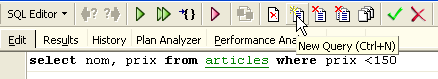
Man erhält dann eine leere Bearbeitungsseite:

Nun kann ein neuer Auftrag SQL eingegeben werden:

und diesen ausführen:
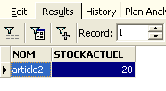
Kehren wir zur Registerkarte [Edit] zurück. Die verschiedenen erteilten Aufträge SQL werden von [IBExpert] gespeichert. Über die Schaltfläche [Previous Query] können Sie zu einem zuvor erteilten Befehl SQL zurückkehren:

Man kehrt dann zur vorherigen Abfrage zurück:

Mit der Schaltfläche [Next Query] gelangt man hingegen zum nächsten Auftrag SQL:

Man findet dann den Auftrag SQL, der in der Liste der gespeicherten Aufträge SQL als nächster folgt:

Mit der Schaltfläche [Delete Query] kann ein Auftrag SQL aus der Liste der gespeicherten Aufträge gelöscht werden:

Mit der Schaltfläche [Clear Current Query] können Sie den Inhalt des Editors für den angezeigten Auftrag SQL löschen:

Mit der Schaltfläche [Commit] können die an der Datenbank vorgenommenen Änderungen endgültig übernommen werden:

Mit der Schaltfläche [RollBack] können die seit dem letzten [Commit] an der Datenbank vorgenommenen Änderungen rückgängig gemacht werden. Wenn seit der Verbindung zur Datenbank kein [Commit] ausgeführt wurde, werden die seit dieser Verbindung vorgenommenen Änderungen rückgängig gemacht.

Nehmen wir ein Beispiel. Fügen wir eine neue Zeile in die Tabelle ein:

Der Befehl SQL wird ausgeführt, es erfolgt jedoch keine Anzeige. Es ist nicht bekannt, ob der Eintrag erfolgt ist. Um dies herauszufinden, führen wir den Befehl SQL im Anschluss an [New Query] aus:

Man erhält mit [Execute] das folgende Ergebnis:

Die Zeile wurde also erfolgreich eingefügt. Sehen wir uns den Inhalt der Tabelle nun auf andere Weise an. Doppelklicken wir im Datenbank-Explorer auf die Tabelle [ARTICLES]:

Wir erhalten die folgende Tabelle:
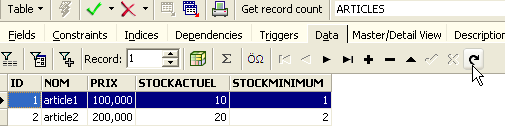
Mit der Pfeilschaltfläche oben lässt sich die Tabelle aktualisieren. Nach der Aktualisierung ändert sich die obige Tabelle jedoch nicht. Es scheint, als wäre die neue Zeile nicht eingefügt worden. Kehren wir zum Editor SQL (F12) zurück und bestätigen wir den mit der Schaltfläche [Commit] erzeugten Auftrag SQL:

Anschließend kehren wir zur Tabelle [ARTICLES] zurück. Wir können feststellen, dass sich auch bei Verwendung der Schaltfläche [Refresh] nichts geändert hat:

Öffnen wir oben die Registerkarte [Fields] und kehren wir anschließend zur Registerkarte [Data] zurück. Diesmal wird die eingefügte Zeile korrekt angezeigt:

Wenn die Ausführung der verschiedenen Befehle SQL beginnt, eröffnet der Editor eine sogenannte Transaktion in der Datenbank. Die durch diese Befehle SQL des Editors SQL vorgenommenen Änderungen sind nur sichtbar, solange man sich im selben Editor SQL befindet (man kann mehrere davon öffnen). Es ist so, als würde der Editor SQL nicht an der eigentlichen Datenbank arbeiten, sondern an einer eigenen Kopie. In der Realität läuft es nicht ganz so ab, aber dieses Bild kann uns helfen, das Konzept der Transaktion zu verstehen. Alle Änderungen, die während einer Transaktion an der Kopie vorgenommen wurden, sind in der eigentlichen Datenbank erst sichtbar, wenn sie durch einen [Commit Transaction] bestätigt wurden. Die aktuelle Transaktion ist dann beendet und eine neue Transaktion beginnt.
Die im Verlauf einer Transaktion vorgenommenen Änderungen können durch einen Vorgang namens [Rollback] rückgängig gemacht werden. Machen wir folgendes Experiment: Starten wir eine neue Transaktion (dazu reicht es, [Commit] in der aktuellen Transaktion auszuführen) mit dem folgenden Befehl SQL:

Führen wir diesen Befehl aus, der alle Zeilen aus der Tabelle [ARTICLES] löscht, und führen wir anschließend den neuen Befehl SQL mit dem Befehl [New Query] aus:

Wir erhalten das folgende Ergebnis:

Alle Zeilen wurden gelöscht. Wir möchten daran erinnern, dass dies an einer Kopie der Tabelle [ARTICLES] durchgeführt wurde. Um dies zu überprüfen, doppelklicken wir auf die unten stehende Tabelle [ARTICLES]:

und sehen wir uns die Registerkarte [Data] an:
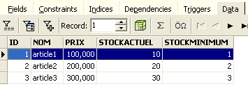
Selbst wenn wir die Schaltfläche [Refresh] verwenden oder zur Registerkarte [Fields] wechseln und anschließend wieder zur Registerkarte [Data] zurückkehren, ändert sich der oben angezeigte Inhalt nicht. Dies wurde bereits erläutert. Wir befinden uns in einer anderen Transaktion, die mit einer eigenen Kopie arbeitet. Kehren wir nun zum Editor SQL (F12) zurück und verwenden die Schaltfläche [RollBack], um die vorgenommenen Zeilenlöschungen rückgängig zu machen:
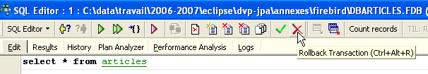
Wir werden um Bestätigung gebeten:
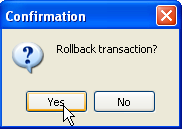
Bestätigen wir. Der Editor SQL bestätigt, dass die Änderungen rückgängig gemacht wurden:

Führen wir die obige Abfrage SQL zur Überprüfung erneut aus. Die zuvor gelöschten Zeilen sind wieder vorhanden:

Der Vorgang [Rollback] hat die Kopie, an der der Editor SQL arbeitet, in den Zustand zurückversetzt, in dem sie zu Beginn der Transaktion war.
5.4.6. Export einer Firebird-Datenbank in ein Skript SQL
Wenn man mit verschiedenen SGBD arbeitet, wie es im Tutorial „Java 5 Persistenz in der Praxis“ der Fall ist, ist es interessant, eine Datenbank aus einem SGBD 1 in ein SQL-Skript exportieren zu können, um dieses anschließend in ein SGBD 2 zu importieren. Dies erspart eine Reihe manueller Schritte. Dies ist jedoch nicht immer möglich, da die SGBD-Dateien oft proprietäre SQL-Erweiterungen haben.
Sehen wir uns an, wie man die vorherige [dbarticles]-Datenbank in ein SQL-Skript exportiert:
 |
- in [1]: Extras / MetaData extrahieren, um die Metadaten
- in [2]: Registerkarte „Meta-Objekte“
- in [3]: Wählen Sie die Tabelle [Articles] aus, deren Struktur (Metadaten) extrahiert werden soll
- in [4]: um das links ausgewählte Objekt nach rechts zu verschieben
 |
- in [5]: Die Tabelle [ARTICLES] wird Teil der extrahierten Metadaten sein
- in [6]: Die Registerkarte [Table de données] dient zur Auswahl der Tabellen, deren Inhalt extrahiert werden soll (im vorherigen Schritt wurde die Tabellenstruktur exportiert)
- in [7]: Um das links ausgewählte Objekt nach rechts zu verschieben
- in [8]: das erzielte Ergebnis
 |
- in [9]: Über die Registerkarte [Options] lassen sich bestimmte Parameter der Extraktion konfigurieren
- in [10]: Die Optionen zur Generierung von Befehlen, die die Verbindung zur Datenbank ermöglichen (SQL), werden deaktiviert. Sie sind Firebird-spezifisch und daher für uns nicht von Interesse.
- in [11]: Auf der Registerkarte [Sortie] kann festgelegt werden, wo das Skript SQL generiert werden soll
- in [12]: Hier wird festgelegt, dass das Skript in einer Datei generiert werden soll
- in [13]: Hier wird der Speicherort dieser Datei festgelegt
- in [14]: Die Generierung des Skripts SQL wird gestartet
Das generierte Skript, bereinigt von Kommentaren, lautet wie folgt:
Hinweis: Die Zeilen 1–2 sind Firebird-spezifisch. Sie müssen aus dem generierten Skript entfernt werden, um ein generisches SQL zu erhalten.
5.4.7. Firebird-Treiber „ “ JDBC
Ein Java-Programm greift über einen Treiber JDBC, der für den verwendeten SGBD spezifisch ist, auf Daten einer Datenbank zu:
 |
In einer mehrschichtigen Architektur wie der oben dargestellten wird der Treiber JDBC [1] von der Schicht [dao] (Data Access Object) verwendet, um auf die Daten einer Datenbank zuzugreifen.
Der Firebird-Treiber JDBC ist unter der URL verfügbar, von der Firebird heruntergeladen wurde:
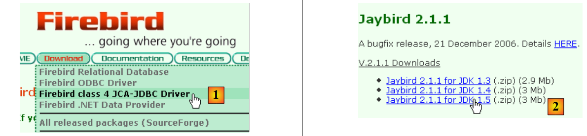 |
 |
- in [1]: Man wählt den Download des Treibers JDBC
- bei [2]: Man wählt einen Treiber JDBC, der mit JDK 1.5 kompatibel ist
- bei [3]: Das Archiv, das den Treiber JDBC enthält, ist [jaybird-full-2.1.1.jar]. Diese Datei wird extrahiert. Sie wird für alle Beispiele mit Firebird verwendet.
Wir legen sie in einem Ordner ab, den wir im Folgenden <jdbc> nennen werden:

Um diesen Treiber JDBC zu überprüfen, verwenden wir Eclipse und das Plugin SQL Explorer (Abschnitt 5.2.6). Zunächst deklarieren wir den Firebird-Treiber JDBC:
 |
- in [1]: Wählen Sie „Window“ / „Preferences“
- zu [2]: Wählen Sie die Option „SQL Explorer / JDBC Drivers“
- in [3]: Wählen Sie den Treiber JDBC für Firebird
- in [4]: zur Konfigurationsphase wechseln
- in [5]: Wechseln Sie zur Registerkarte [Extra Class Path]
- Mit [6] die Treiberdatei JDBC auswählen. Anschließend erscheint diese unter [7]. Hier wird der zuvor im Ordner <jdbc> abgelegte Treiber ausgewählt
- in [8]: der Name der Java-Klasse des Treibers JDBC. Dieser kann über die Schaltfläche [8b] abgerufen werden.
- Klicken Sie auf „[OK]“, um die Konfiguration zu bestätigen
 |
- in [9]: Der Firebird-Treiber JDBC ist nun konfiguriert. Man kann nun mit seiner Nutzung fortfahren.
 |
- in [1]: Öffnen Sie eine neue Perspektive
- in [2]: Wählen Sie die Perspektive [SQL Explorer]
 |
- in [3]: Eine neue Verbindung erstellen
- in [4]: ihr einen Namen geben
- in [5]: Wählen Sie aus der Dropdown-Liste den Firebird-Treiber JDBC aus
- in [6]: Die URL der Datenbank angeben, mit der eine Verbindung hergestellt werden soll, hier: [jdbc:firebirdsql:localhost/3050:C:\data\2006-2007\eclipse\dvp-jpa\annexes\jpa\jpa.fdb]. [jpa.fdb] ist die zuvor mit IBExpert erstellte Datenbank.
- in [7]: der Benutzername für die Verbindung, hier [sysdba], der Firebird-Administrator
- in [8]: sein Passwort [masterkey]
- Die Verbindungskonfiguration wird mit [OK] bestätigt
 |
- in [1]: Man doppelklickt auf den Namen der Verbindung, die man öffnen möchte
- in [2]: Man meldet sich an (sysdba, masterkey)
- in [3]: Die Verbindung ist geöffnet
- in [4]: Man sieht die Struktur der Datenbank. Dort ist die Tabelle [ARTICLES] zu sehen. Man wählt sie aus.
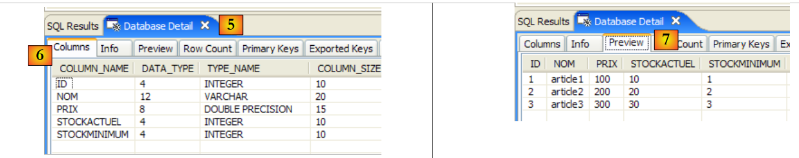 |
- in [5]: Im Fenster [Database Detail] werden die Details des in [4] ausgewählten Objekts angezeigt, hier die Tabelle [ARTICLES]
- in [6]: Die Registerkarte [Columns] zeigt die Struktur der Tabelle an
- in [7]: Die Registerkarte [Preview] zeigt die Struktur der Tabelle an
Im Fenster [SQL Editor] können Abfragen SQL ausgeführt werden:
 |
- in [1]: Wählen Sie eine offene Verbindung aus
- in [2]: den auszuführenden Befehl SQL eingeben
- in [3]: den Befehl ausführen
- in [4]: Rückruf des ausgeführten Befehls
- in [5]: das Ergebnis
5.5. SGBD t MySQL5
5.5.1. Installation
Der SGBD MySQL5 ist unter der URL [http://dev.mysql.com/downloads/] verfügbar:
 |
- unter [1]: Wählen Sie die gewünschte Version
- unter [2]: Wählen Sie eine Windows-Version
 |
- unter [3]: Wählen Sie die gewünschte Windows-Version aus
- in [4]: Die heruntergeladene ZIP-Datei enthält eine ausführbare Datei [Setup.exe] [4b], die extrahiert und ausgeführt werden muss, um MySQL5 zu installieren
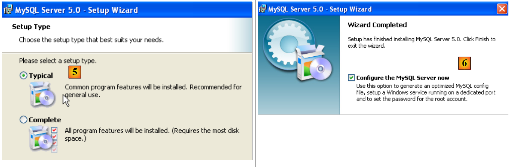 |
- in [5]: Wählen Sie eine Standardinstallation
- in [6]: Nach Abschluss der Installation kann der Server konfiguriert werden MySQL5
 |
- in [7]: Wählen Sie eine Standardkonfiguration, bei der die wenigsten Fragen gestellt werden
- in [8]: Der Server MySQL5 wird als Windows-Dienst ausgeführt
 |
- in [9]: Standardmäßig ist der Serveradministrator „root“ ohne Passwort. Man kann diese Konfiguration beibehalten oder „root“ ein neues Passwort zuweisen. Wenn die Installation von MySQL5 auf die Deinstallation einer früheren Version folgt, kann dieser Vorgang fehlschlagen. Es gibt kaum Möglichkeiten, dies rückgängig zu machen.
- In [10]: Es wird die Serverkonfiguration angefordert
Bei der Installation von MySQL5 wird ein Ordner in [Démarrer / Programmes ] erstellt:

Mit [MySQL Server Instance Config Wizard] kann der Server neu konfiguriert werden:
 |
 |
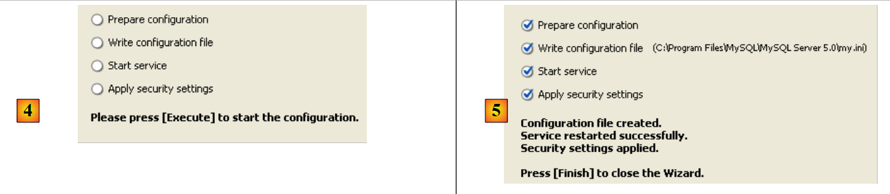 |
- in [3]: Wir ändern das Root-Passwort (hier root/root)
5.5.2. MySQL5 starten / beenden
Der Server MySQL5 wurde als Windows-Dienst mit automatischem Start installiert, c.a.d wird bereits beim Start von Windows gestartet. Diese Betriebsweise ist unpraktisch. Wir werden sie ändern:
[Démarrer / Panneau de configuration / Performances et maintenance / Outils d'administration / Services ]:
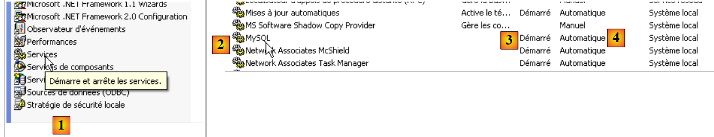 |
- in [1]: Wir doppelklicken auf [Services]
- in [2]: Wir sehen, dass ein Dienst namens [MySQL] vorhanden ist, dass er gestartet ist ([3]) und dass er automatisch gestartet wird ([4]).
Um diese Einstellung zu ändern, doppelklicken wir auf den Dienst [MySQL]:
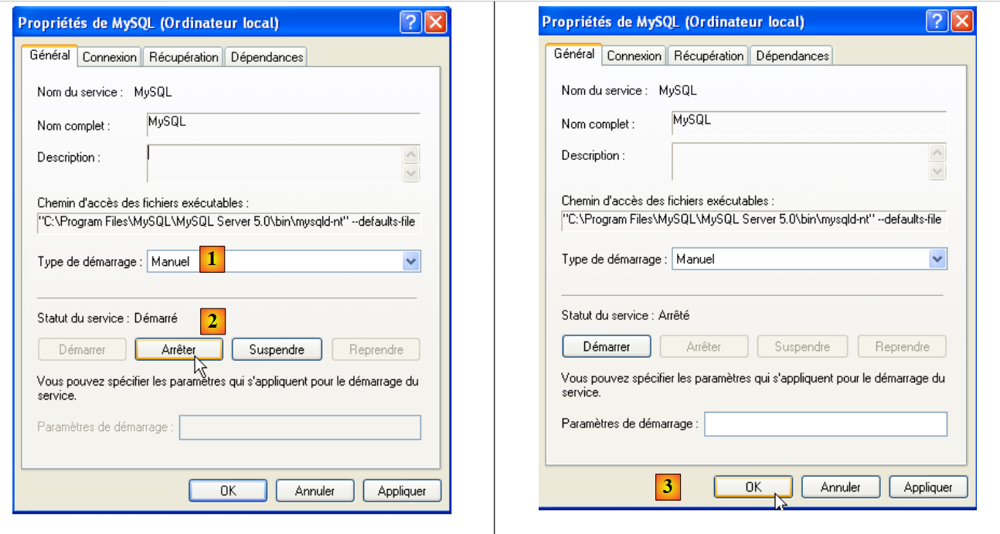 |
- in [1]: Wir stellen den Dienst auf manuellen Start um
- in [2]: Wir beenden ihn
- bei [3]: Wir bestätigen die neue Konfiguration des Dienstes
Um den Dienst MySQL manuell zu starten und zu beenden, können zwei Verknüpfungen erstellt werden:
 |
- in [1]: die Verknüpfung zum Starten von MySQL5
- [2]: Die Verknüpfung zum Beenden
5.5.3. Verwaltungs-Clients für MySQL
Auf der Website von MySQL finden sich Verwaltungs-Clients für SGBD:
 |
- in [1]: Wählen Sie [MySQL GUI Tools], das verschiedene grafische Clients enthält, mit denen Sie entweder SGBD verwalten oder
- in [2]: Wählen Sie die passende Windows-Version aus
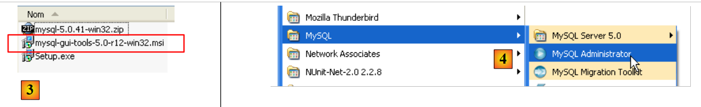 |
- in [3]: Man lädt eine .msi-Datei herunter, die ausgeführt werden muss
- in [4]: Nach Abschluss der Installation erscheinen neue Verknüpfungen im Ordner [Menu Démarrer / Programmes / mySQL].
Starten Sie MySQL (über die von Ihnen erstellten Verknüpfungen) und anschließend [MySQL Administrator] über das obige Menü:
 |
- in [1]: Geben Sie das Passwort des Benutzers „root“ (hier „root“) ein
- in [2]: Sie sind nun angemeldet und sehen, dass MySQL aktiv ist
5.5.4. Erstellen eines Benutzers „jpa“ und einer Datenbank „jpa“
Das Tutorial verwendet MySQL5 mit einer Datenbank namens „jpa“ und einem gleichnamigen Benutzer. Diese erstellen wir nun. Zunächst den Benutzer:
 |
- in [1]: Wählen Sie [User Administration] aus
- in [2]: Wir klicken mit der rechten Maustaste auf den Eintrag [User accounts], um einen neuen Benutzer anzulegen
- in [3]: Der Benutzer heißt jpa und sein Passwort lautet jpa
- in [4]: Die Erstellung wird bestätigt
- in [5]: Der Benutzer [jpa] erscheint im Fenster [User Accounts]
Nun zur Datenbank:
 |
- in [1]: Auswahl der Option [Catalogs]
- in [2]: Rechtsklick auf das Fenster [Schemata], um ein neues Schema zu erstellen (bezieht sich auf eine Datenbank)
- in [3]: Das neue Schema wird benannt
- in [4]: Es erscheint im Fenster [Schemata]
 |
- in [5]: Das Schema [jpa] wird ausgewählt
- in [6]: Die Objekte des Schemas [jpa] werden angezeigt, insbesondere die Tabellen. Es gibt noch keine. Mit einem Rechtsklick könnten Sie welche anlegen. Wir überlassen dies dem Leser.
Kehren wir zum Benutzer [jpa] zurück, um ihm alle Rechte für das Schema [jpa] zu erteilen:
 |
- in [1], dann in [2]: Wählen Sie den Benutzer [jpa]
- in [3]: Wählen Sie die Registerkarte [Schema Privileges]
- in [4]: Man wählt das Schema [jpa] aus
- in [5]: Dem Benutzer [jpa] werden alle Berechtigungen für das Schema [jpa] erteilt
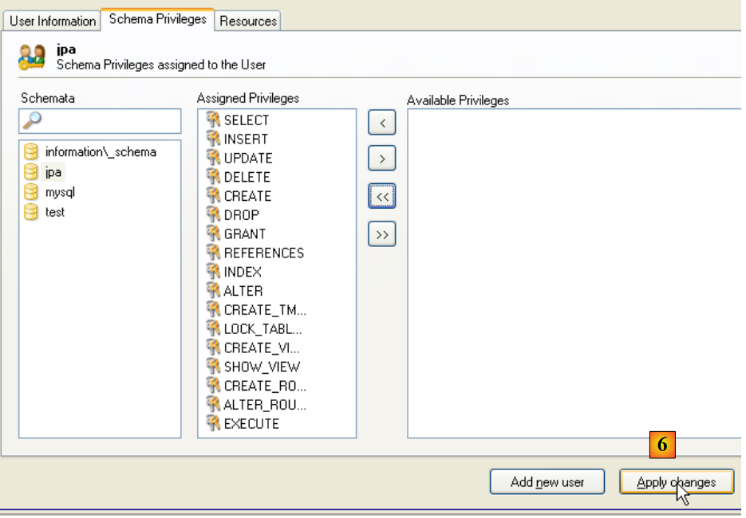 |
- in [6]: Die vorgenommenen Änderungen werden bestätigt
Um zu überprüfen, ob der Benutzer [jpa] mit dem Schema [jpa] arbeiten kann, beenden wir den Administrator MySQL. Wir starten ihn neu und melden uns diesmal unter dem Namen [jpa/jpa] an:
 |
- in [1]: Man meldet sich an (jpa/jpa)
- bei [2]: Die Anmeldung war erfolgreich, und in [Schemata] sieht man die Schemata, für die man Berechtigungen hat. Man sieht das Schema [jpa].
Wir werden nun dieselbe Tabelle [ARTICLES] erstellen wie bei Firebird (SGBD), und zwar mithilfe des Skripts SQL [schema-articles.sql], das in Abschnitt 5.4.6 generiert wurde.
 |
- in [1]: Verwenden Sie die Anwendung [MySQL Query Browser]
- bei [2], [3], [4]: sich anmelden (jpa / jpa / jpa)
 |
- in [5]: ein Skript SQL öffnen, um es auszuführen
- in [6]: Bezieht sich auf das in Abschnitt 5.4.6 erstellte Skript [schema-articles.sql].
 |
- in [7]: das geladene Skript
- in [8]: Es wird ausgeführt
- in [9]: Die Tabelle [ARTICLES] wurde angelegt
5.5.5. Treiber „ “ JDBC von MySQL5
Der Treiber JDBC von MySQL kann an derselben Stelle heruntergeladen werden wie der SGBD:
 |
 |
- bei [1]: Wählen Sie den passenden Treiber JDBC aus
- für [2]: Wählen Sie die passende Windows-Version aus
- in [3]: In der heruntergeladenen ZIP-Datei ist das Java-Archiv, das den Treiber JDBC enthält, [mysql-connector-java-5.0.5-bin.jar]. Dieses wird extrahiert, um es in den Beispielen des Tutorials JPA zu verwenden.
Wir legen es wie das vorherige (Absatz 5.4.7) im Ordner <jdbc> ab:
 |
Um diesen Treiber JDBC zu testen, verwenden wir Eclipse und das Plugin SQL Explorer. Der Leser wird gebeten, die in Abschnitt 5.4.7 erläuterte Vorgehensweise zu befolgen. Wir zeigen einige aussagekräftige Screenshots:
 |
- in [1]: Das Treiberarchiv JDBC wurde von MySQL5
- in [2]: Der Treiber JDBC von MySQL5 ist verfügbar
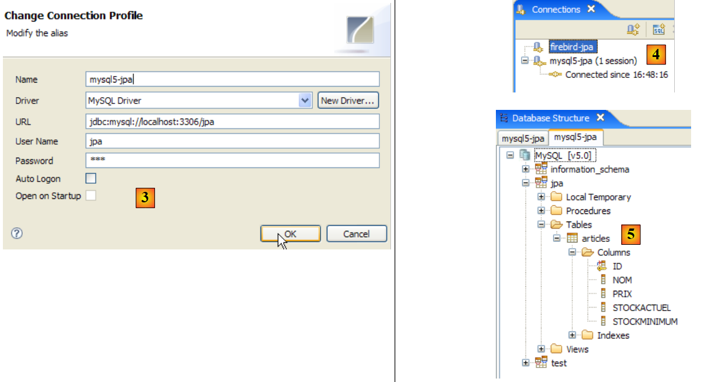 |
- zu [3]: Definition der Verbindung (Benutzername, Passwort) = (jpa, jpa)
- in [4]: Die Verbindung ist aktiv
- in [5]: Verbindung zur Datenbank hergestellt
5.6. SGBD PostgreSQL
5.6.1. Installation
Das SGBD PostgreSQL ist unter der URL [http://www.postgresql.org/download/] verfügbar:
 |
- unter [1]: die Download-Seiten für PostgreSQL
- unter [2]: Wählen Sie eine Windows-Version
- unter [3]: Wählen Sie eine Version mit Installationsprogramm
 |
- zu [4]: Der Inhalt der heruntergeladenen ZIP-Datei. Doppelklicken Sie auf die Datei [postgresql-8.2.msi]
- in [5]: Die erste Seite des Installationsassistenten
 |
- in [6]: Wählen Sie eine Standardinstallation, indem Sie die Standardwerte übernehmen
- in [6b]: Erstellung des Windows-Kontos, das den Dienst PostgreSQL startet; hier das Konto „pgres“ mit dem Passwort „pgres“.
 |
- in [7]: Lassen Sie PostgreSQL das Konto [pgres] erstellen, falls dieses noch nicht existiert
- in [8]: das Administratorkonto für SGBD festlegen, hier „postgres“ mit dem Passwort „postgres“
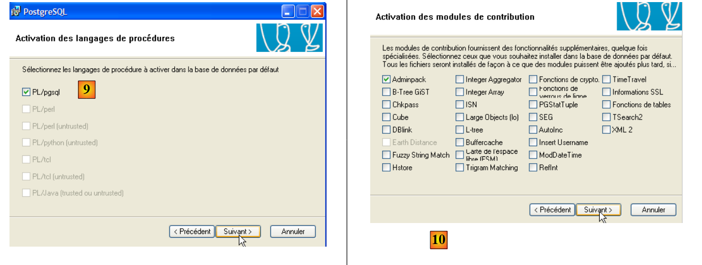 |
- in [9] und [10]: Übernehmen Sie die Standardwerte bis zum Ende des Assistenten. PostgreSQL wird installiert.
Durch die Installation von PostgreSQL wird ein Ordner in [Démarrer / Programmes ] erstellt:

5.6.2. PostgreSQL starten/beenden
Der Server PostgreSQL wurde als Windows-Dienst mit automatischem Start installiert, c.a.d wird bereits beim Windows-Start gestartet. Diese Betriebsweise ist unpraktisch. Wir werden sie ändern:
[Démarrer / Panneau de configuration / Performances et maintenance / Outils d'administration / Services ]:
 |
- in [1]: Wir doppelklicken auf [Services]
- in [2]: Wir sehen, dass ein Dienst namens [PostgreSQL] vorhanden ist, dass er gestartet ist ([3]) und dass er automatisch gestartet wird ([4]).
Um diese Einstellung zu ändern, doppelklicken wir auf den Dienst [PostgreSQL]:
 |
- in [1]: Wir stellen den Dienst auf manuellen Start um
- in [2]: Wir beenden ihn
- bei [3]: Wir bestätigen die neue Konfiguration des Dienstes
Um den Dienst PostgreSQL manuell zu starten und zu beenden, können die Verknüpfungen im Ordner [PostgreSQL] verwendet werden:
 |
- in [1]: Die Verknüpfung zum Starten von PostgreSQL
- in [2]: die Verknüpfung zum Beenden
5.6.3. Verwaltung von PostgreSQL
Auf dem obigen Screenshot ermöglicht die Anwendung [pgAdmin III] (3) die Verwaltung von SGBD und PostgreSQL. Starten wir zunächst SGBD und anschließend [pgAdmin III] über das obige Menü:
 |
- zu [1]: Doppelklicken Sie auf den Server PostgreSQL, um eine Verbindung herzustellen
- zu [2,3]: Melden Sie sich hier als Administrator von SGBD an (postgres / postgres)
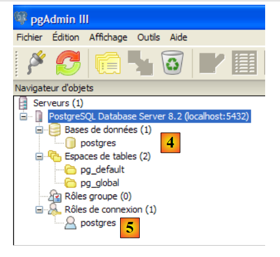 |
- auf [4]: die einzige vorhandene Datenbank
- in [5]: der einzige vorhandene Benutzer
5.6.4. Erstellung eines Benutzers „jpa“ und einer Datenbank „jpa“
In diesem Tutorial wird PostgreSQL mit einer Datenbank namens „jpa“ und einem gleichnamigen Benutzer verwendet. Diese legen wir nun an. Zunächst den Benutzer:
 |
- in [1]: Wir legen eine neue Rolle (~Benutzer) an
- in [2]: Erstellung des Benutzers „jpa“
- in [3]: Sein Passwort lautet „jpa“
- in [4]: Das Passwort wird wiederholt
- in [5]: Dem Benutzer wird das Anlegen von Datenbanken gestattet
- in [6]: Der Benutzer [jpa] erscheint in den Anmelderollen
Nun zur Datenbank:
 |
- in [1]: Es wird eine neue Verbindung zum Server hergestellt
- in [2]: Sie wird „jpa“ heißen
- in [3]: Rechner, mit dem eine Verbindung hergestellt werden soll
- in [4]: der Benutzer, der sich anmeldet
- in [5]: sein Passwort. Die Konfiguration der Verbindung wird mit [OK] bestätigt
- in [6]: Die neue Verbindung wurde erstellt. Sie gehört dem Benutzer jpa. Dieser wird nun eine neue Datenbank anlegen:
 |
- n [1]: Es wird eine neue Datenbank hinzugefügt
- in [2]: Ihr Name lautet jpa
- in [3]: Ihr Eigentümer ist der zuvor angelegte Benutzer jpa. Wir bestätigen mit [OK]
- in [4]: Die Datenbank „jpa“ wurde erstellt. Ein einfacher Klick darauf verbindet uns mit ihr und zeigt uns ihre Struktur an:
 |
- zu [5]: Die Objekte des Schemas [jpa] werden angezeigt, insbesondere die Tabellen. Es gibt noch keine. Mit einem Rechtsklick könnten wir welche anlegen. Das überlassen wir dem Leser.
Wir werden nun dieselbe Tabelle [ARTICLES] erstellen wie bei den vorherigen SGBD, und zwar mithilfe des in Abschnitt 5.4.6 generierten Skripts SQL [schema-articles.sql].
 |
- in [1]: den Editor SQL öffnen
- in [2]: ein Skript SQL öffnen
- in [3]: das in Abschnitt 5.4.6 erstellte Skript [schema-articles.sql] angeben.
 |
- in [4]: Das Skript wurde geladen. Es wird ausgeführt.
- in [5]: Die Tabelle [ARTICLES] wurde angelegt.
- in [6, 7]: deren Inhalt
5.6.5. Treiber JDBC von PostgreSQL
Der Treiber JDBC für PostgreSQL ist im Ordner [jdbc] des Installationsordners von PostgreSQL verfügbar:
 |
Wir legen das JDBC-Archiv wie zuvor beschrieben (Abschnitt 5.4.7) im Ordner <jdbc> ab:
 |
Um diesen Treiber JDBC zu testen, verwenden wir Eclipse und das Plugin SQL Explorer. Der Leser wird gebeten, die in Abschnitt 5.4.7 beschriebene Vorgehensweise zu befolgen. Wir zeigen einige aussagekräftige Screenshots:
 |
- in [1]: Das Treiberarchiv JDBC wurde von PostgreSQL
- in [2]: Der Treiber JDBC von PostgreSQL ist verfügbar
 |
- zu [3]: Definition der Verbindung (Benutzername, Passwort) = (jpa, jpa)
- in [4]: Die Verbindung ist aktiv
- in [5]: Die Datenbank ist verbunden
- in [6]: Inhalt der Tabelle [ARTICLES]
5.7. SGBD , Oracle 10g Express
5.7.1. Installation
Das SGBD Oracle 10g Express ist unter der URL [http://www.oracle.com/technology/software/products/database/xe/index.html] verfügbar:
 |
- unter [1]: die Download-Seite für Oracle 10g Express
- unter [2]: Wählen Sie eine Windows-Version aus. Führen Sie die Datei nach dem Herunterladen aus:
 |
- in [1]: Doppelklicken Sie auf die Datei [OracleXE.exe]
- in [2]: Die erste Seite des Installationsassistenten
 |
- in [3]: Die Lizenz akzeptieren
- in [4]: Die Standardwerte akzeptieren.
 |
- in [5,6]: Der Benutzer SYSTEM erhält das Passwort „system“.
- in [7]: Die Installation wird gestartet
Die Installation von Oracle 10g Express erstellt einen Ordner in [Démarrer / Programmes ]:
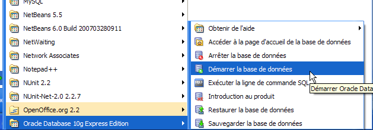
5.7.2. Oracle 10g starten / beenden
Wie bei den vorherigen SGBD-Instanzen wurde Oracle 10g als Windows-Dienst mit automatischem Start installiert. Wir ändern diese Konfiguration:
[Démarrer / Panneau de configuration / Performances et maintenance / Outils d'administration / Services ]:
 |
- in [1]: Wir doppelklicken auf [Services]
- in [2]: Wir sehen, dass ein Dienst namens [OracleServiceXE] vorhanden ist, dass er gestartet ist ([3]) und dass er automatisch gestartet wird ([4]).
- in [5]: Ein weiterer Oracle-Dienst namens „Listener“ ist ebenfalls aktiv und wird automatisch gestartet.
Um diese Einstellung zu ändern, doppelklicken wir auf den Dienst [OracleServiceXE]:
 |
- in [1]: Wir stellen den Dienst auf manuellen Start ein
- bei [2]: Wir stoppen ihn
- bei [3]: Wir bestätigen die neue Konfiguration des Dienstes
Ebenso wird mit dem Dienst [OracleXETNSListener] verfahren (siehe [5] weiter oben). Um den Dienst OracleServiceXE manuell zu starten und zu stoppen, können die Verknüpfungen im Ordner [Oracle] verwendet werden:
 |
- in [1]: zum Starten von SGBD
- in [2]: zum Beenden
- in [3]: zur Verwaltung (wodurch der Prozess gestartet wird, falls er nicht bereits läuft)
5.7.3. Erstellung eines Benutzers „jpa“ und einer Datenbank „jpa“
Auf dem obigen Screenshot ermöglicht die Anwendung [3] die Verwaltung von SGBD Oracle 10g Express. Starten wir zunächst SGBD und [1] und anschließend die Verwaltungsanwendung [3] über das obige Menü:
 |
- in [1]: Melden Sie sich als Administrator von SGBD an, hier (system / system)
- in [2]: Man legt einen neuen Benutzer an
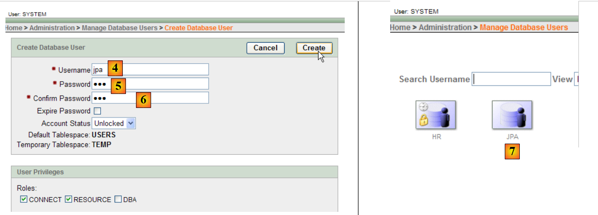 |
- in [4]: Benutzername
- in [5, 6]: sein Passwort, hier jpa
- in [7]: Der Benutzer „jpa“ wurde angelegt
Unter Oracle wird ein Benutzer automatisch einer gleichnamigen Datenbank zugeordnet. Die Datenbank „jpa“ existiert also gleichzeitig mit dem Benutzer „jpa“.
5.7.4. Erstellung der Tabelle [ARTICLES] in der Datenbank „jpa“
OracleXE wurde mit einem SQL-Client installiert, der im Zeilenmodus arbeitet. Komfortabler lässt sich mit dem ebenfalls von Oracle bereitgestellten SQL- -Developer arbeiten. Dieser ist auf der Website zu finden:
[http://www.oracle.com/technology/products/database/sql_developer/index.html]
 |
- in [1]: die Download-Seite
- bei [2]: Wählen Sie eine Windows-Version ohne JRE, falls dieses bereits installiert ist (wie in diesem Fall), da [SQL Developer] eine Java-Anwendung ist.
 |
- in [3]: Die heruntergeladene ZIP-Datei entpacken
- zu [4]: Starten Sie die ausführbare Datei [sqldeveloper.exe]
 |
- in [5]: Geben Sie beim ersten Start von [SQL Developer] den Pfad zur auf dem Rechner installierten JRE an
- in [5b]: eine neue Verbindung erstellen
 |
- in [6]: Mit SQL Developer können Sie eine Verbindung zu verschiedenen SGBD herstellen. Wählen Sie „Oracle“.
- in [7]: Name der Verbindung, die gerade erstellt wird
- in [8]: Eigentümer der Verbindung
- in [9]: sein Passwort (jpa)
- in [10]: Standardwerte beibehalten
- in [11]: zum Testen der Verbindung (Oracle muss gestartet sein)
- in [12]: zum Abschluss der Verbindungskonfiguration
- in [13]: die Objekte der Datenbank jpa
- in [14]: Hier können Tabellen angelegt werden. Wie in den vorherigen Fällen werden wir die Tabelle [ARTICLES] anhand des in Abschnitt 5.4.6 erstellten Skripts anlegen.
 |
- in [15]: Man öffnet ein Skript SQL
- in [16]: Wir geben das in Abschnitt 5.4.6 erstellte Skript SQL an.
- in [17]: das Skript, das ausgeführt werden soll
 |
- in [18]: das Ergebnis der Ausführung: Die Tabelle [ARTICLES] wurde erstellt. Durch Doppelklick darauf erhält man Zugriff auf ihre Eigenschaften.
- in [19]: der Inhalt der Tabelle.
5.7.5. Treiber JDBC von OracleXE
Der Treiber JDBC für OracleXE befindet sich im Ordner [jdbc/lib] des Installationsordners von OracleXE [1]:
 |
Wir legen das JDBC-Archiv [ojdbc14.jar] wie zuvor (Abschnitt 5.4.7) im Ordner <jdbc> [2] ab:
Um diesen Treiber JDBC zu testen, verwenden wir Eclipse und das Plugin SQL Explorer. Der Leser wird gebeten, die in Abschnitt 5.4.7 beschriebene Vorgehensweise zu befolgen. Wir zeigen einige aussagekräftige Screenshots:
 |
- in [1]: Das Treiberarchiv JDBC wurde von OracleXE
- in [2]: Der Treiber JDBC von OracleXE ist verfügbar
 |
- in [3]: Definition der Verbindung (Benutzername, Passwort) = (jpa, jpa)
- in [4]: Die Verbindung ist aktiv
- in [5]: Die Datenbank ist verbunden
- in [6]: Inhalt der Tabelle [ARTICLES]
5.8. SGBD t SQL Server Express 2005
5.8.1. Installation
Der SGBD SQL Server Express 2005 ist unter der URL [http://msdn.microsoft.com/vstudio/express/sql/download/] verfügbar:
 |
- unter [1]: Laden Sie zunächst die Plattform .NET 2.0 herunter und installieren Sie sie
- unter [2]: Anschließend SQL Server Express 2005 installieren und herunterladen
- in [3]: Anschließend SQL Server Management Studio Express installieren und herunterladen, mit dem sich der SQL Server verwalten lässt
Durch die Installation von SQL Server Express wird ein Ordner in [Démarrer / Programmes ] erstellt:
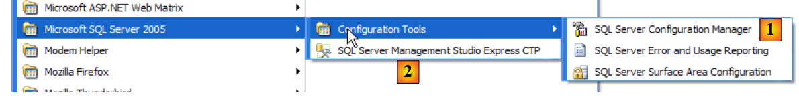 |
- in [1]: die Konfigurationsanwendung für den SQL-Server. Ermöglicht außerdem das Starten und Beenden des Servers
- in [2]: die Verwaltungsanwendung des Servers
5.8.2. SQL-Server starten/beenden
Wie bei den vorherigen SGBD-Instanzen wurde der SQL Server Express als Windows-Dienst mit automatischem Start installiert. Wir ändern diese Konfiguration:
[Démarrer / Panneau de configuration / Performances et maintenance / Outils d'administration / Services ]:
 |
- in [1]: Wir doppelklicken auf [Services]
- in [2]: Wir sehen, dass ein Dienst namens [SQL Server] vorhanden ist, dass er gestartet ist ([3]) und dass er automatisch gestartet wird ([4]).
- in [5]: Ein weiterer Dienst, der mit dem SQL-Server verbunden ist und den Namen „SQL Server Browser“ trägt, ist ebenfalls aktiv und wird automatisch gestartet.
Um diese Einstellung zu ändern, doppelklicken wir auf den Dienst [SQL Server]:
 |
- in [1]: Wir stellen den Dienst auf manuellen Start um
- bei [2]: Wir beenden ihn
- bei [3]: Wir bestätigen die neue Konfiguration des Dienstes
Mit dem Dienst [SQL Server Browser] wird ebenso verfahren (siehe [5] weiter oben). Um den Dienst „SQL server“ manuell zu starten und zu beenden, kann die Anwendung „[1]“ aus dem Ordner „[SQL server]“ verwendet werden:
 |
 |
- in [1]: Stellen Sie sicher, dass das Protokoll TCP/IP aktiviert ist (enabled), und wechseln Sie anschließend zu den Eigenschaften des Protokolls.
- in [2]: Auf der Registerkarte [IP Addresses], Option [IPAll]:
- Das Feld [TCP Dynamic ports] bleibt leer
- Der Listening-Port des Servers ist in [TCP Port] auf 1433 festgelegt
 |
- in [3]: Ein Rechtsklick auf den Dienst [SQL Server] öffnet die Optionen zum Starten und Beenden des Servers. Hier wird er gestartet.
- in [4]: Der SQL-Server wird gestartet
5.8.3. Erstellen eines Benutzers „jpa“ und einer Datenbank „jpa“
Starten Sie den SGBD wie oben beschrieben und anschließend die Verwaltungsanwendung [1] über das untenstehende Menü:
 |
 |
- in [1]: Man meldet sich als Windows-Administrator am SQL-Server an
- in [2]: Konfigurieren Sie die Verbindungseigenschaften
 |
- in [3]: Man aktiviert einen gemischten Verbindungsmodus zum Server: entweder mit einem Windows-Login (ein Windows-Benutzer) oder mit einem SQL-Server-Login (ein im SQL-Server definiertes Konto, unabhängig von jedem Windows-Konto).
- in [3b]: Es wird ein SQL-Server-Benutzer angelegt
 |
- in [4]: Option [General]
- in [5]: der Benutzername
- in [6]: das Passwort (hier jpa)
- in [7]: Option [Server Roles]
- in [8]: Der Benutzer „jpa“ erhält die Berechtigung, Datenbanken anzulegen
Diese Konfiguration wird bestätigt:
 |
- in [9]: Der Benutzer „jpa“ wurde angelegt
- in [10]: Man meldet sich ab
- in [11]: Wir melden uns erneut an
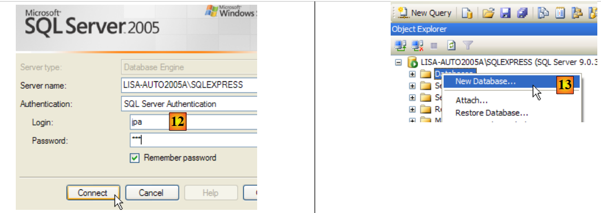 |
- in [12]: Anmeldung als Benutzer jpa/jpa
- in [13]: Nach der Anmeldung legt der Benutzer „jpa“ eine Datenbank an
 |
- in [14]: Die Datenbank erhält den Namen jpa
- in [15]: und gehört dem Benutzer jpa
- in [16]: Die Datenbank „jpa“ wurde angelegt
5.8.4. Erstellung der Tabelle [ARTICLES] in der Datenbank jpa
Wie in den vorangegangenen Beispielen werden wir die Tabelle [ARTICLES] anhand des in Abschnitt 5.4.6 erstellten Skripts anlegen.
 |
- in [1]: Wir öffnen ein Skript SQL
- in [2]: Wir geben das in Abschnitt 5.4.6, Seite 240, erstellte Skript SQL an.
- in [3]: Man muss sich erneut anmelden (jpa/jpa)
- in [4]: das Skript, das ausgeführt werden soll
- in [5]: Wählen Sie die Datenbank aus, in der das Skript ausgeführt werden soll
- in [6]: Ausführen
 |
- in [7]: das Ergebnis der Ausführung: Die Tabelle [ARTICLES] wurde angelegt.
- in [8]: Der Inhalt wird abgefragt
- in [9]: Der Inhalt der Tabelle.
5.8.5. Treiber JDBC von SQL Server Express
 |
- in [1]: Eine Google-Suche mit dem Text [Microsoft SQL Server 2005 JDBC Driver] führt uns zur Download-Seite des Treibers JDBC. Wir wählen die neueste Version aus
- in [2]: die heruntergeladene Datei. Wir doppelklicken darauf. Es erfolgt eine Entpackung, wodurch ein Ordner entsteht, in dem sich der JDBC-Treiber [3] befindet
- mit der Bezeichnung [4]: Wir legen das JDBC-Archiv [sqljdbc.jar] wie zuvor (Absatz 5.4.7) im Ordner <jdbc> ab
Um diesen Treiber JDBC zu testen, verwenden wir Eclipse und das Plugin SQL Explorer. Der Leser wird gebeten, die in Abschnitt 5.4.7 erläuterte Vorgehensweise zu befolgen. Wir zeigen einige aussagekräftige Screenshots:
 |
- in [1]: Das Archiv des Treibers JDBC wurde von SQL Server
- in [2]: Der Treiber JDBC vom Server SQL ist verfügbar
 |
- zu [3]: Definition der Verbindung (Benutzername, Passwort) = (jpa, jpa)
- in [4]: Die Verbindung ist aktiv
- in [5]: Die Datenbank ist verbunden
- in [6]: Inhalt der Tabelle [ARTICLES]
5.9. SGBD t HSQLDB
5.9.1. Installation
Das SGBD HSQLDB ist unter der URL [http://sourceforge.net/projects/hsqldb] verfügbar. Es handelt sich um ein in Java geschriebenes SGBD, das sehr wenig Speicherplatz beansprucht und Datenbanken im Arbeitsspeicher statt auf der Festplatte verwaltet. Das Ergebnis ist eine sehr hohe Ausführungsgeschwindigkeit der Abfragen. Dies ist sein Hauptvorteil. Die so im Arbeitsspeicher erstellten Datenbanken können wiederhergestellt werden, wenn der Server heruntergefahren und anschließend neu gestartet wird. Die zum Erstellen der Datenbanken ausgegebenen Befehle werden nämlich in einer Protokolldatei gespeichert, um beim nächsten Start des Servers wieder ausgeführt zu werden. Auf diese Weise wird die Persistenz der Datenbanken über einen längeren Zeitraum gewährleistet.
Die Methode hat ihre Grenzen, und HSQLDB ist kein SGBD für den kommerziellen Einsatz. Sein Hauptnutzen liegt in Tests oder Demonstrationsanwendungen. Da HSQLDB beispielsweise in Java geschrieben ist, lässt es sich in Ant-Aufgaben (Another Neat Tool) einbinden, einem Java-Tool zur Automatisierung von Aufgaben. So können tägliche Tests von in der Entwicklung befindlichem Code, die durch Ant automatisiert werden, Tests von Datenbanken integrieren, die von SGBD und HSQLDB verwaltet werden. Der Server wird durch Java-Aufgaben gestartet, gestoppt und verwaltet.
 |
- in [1]: die Download-Seite
- in [2]: die aktuellste Version herunterladen
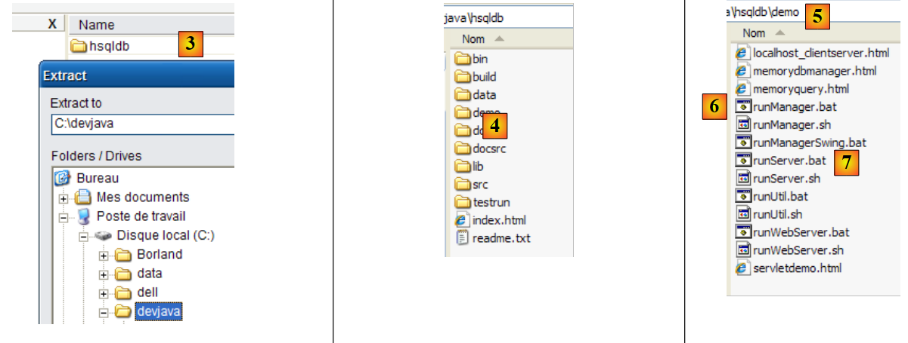 |
- in [3]: Die heruntergeladene ZIP-Datei entpacken
- in [4]: Der Ordner [hsqldb], der beim Entpacken entstanden ist
- zu [5]: den Ordner „[demo]“, der das Skript zum Starten des Servers „[hsql]“ und „[6]“ enthält, sowie den Ordner „[7]“, der das Skript zum Starten eines einfachen Tools zur Serververwaltung enthält.
5.9.2. HSQLDB starten/beenden
Um den Server HSQLDB zu starten, doppelklicken Sie auf die oben genannte Anwendung [runManager.bat] [6]:
 |
- in [1]: Man sieht, dass zum Beenden des Servers lediglich Strg+C im Fenster gedrückt werden muss.
5.9.3. Die Datenbank [test]
Die standardmäßig verwaltete Datenbank befindet sich im Ordner [data]:
 |
- in [1]: Beim Start führt SGBD HSQL das Skript namens [test.script] aus
- Zeile 1: Ein Schema mit dem Namen [public] wird angelegt
- Zeile 2: Ein Benutzer mit dem Namen [sa] und einem leeren Passwort wird angelegt
- Zeile 3: Der Benutzer [sa] erhält Administratorrechte
Letztendlich wurde ein Benutzer mit Administratorrechten angelegt. Diesen Benutzer werden wir im weiteren Verlauf verwenden.
5.9.4. Treiber JDBC von HSQL
Der JDBC-Treiber von SGBD HSQL befindet sich im Ordner [lib]:
 |
- in [1]: Das Archiv [hsqldb.jar] enthält den JDBC-Treiber von SGBD HSQL
- in [2]: Wir legen dieses Archiv wie die vorherigen (Abschnitt 5.4.7) im Ordner <jdbc> ab
Um diesen Treiber JDBC zu überprüfen, verwenden wir Eclipse und das Plugin SQL Explorer. Der Leser wird gebeten, die in Abschnitt 5.4.7 erläuterte Vorgehensweise zu befolgen. Wir zeigen einige aussagekräftige Screenshots:
 |
- in [1]: [window / preferences / SQL Explorer / JDBC Drivers]
- in [2]: Der Server [HSQLDB] wird konfiguriert
- in [3]: Das Archiv [hsqldb.jar], das den JDBC-Treiber enthält, wird angegeben
- in [4]: Der Name der Java-Klasse des JDBC-Treibers
- in [5]: Der JDBC-Treiber ist konfiguriert
Anschließend stellen wir eine Verbindung zum Server HSQL her. Diesen starten wir zuvor.
 |
- in [6]: Es wird eine neue Verbindung erstellt
- in [7]: Man gibt ihr einen Namen
- in [8]: Man möchte eine Verbindung zum Server HSQLDB herstellen
- in [9]: Die URL der Datenbank, mit der eine Verbindung hergestellt werden soll. Dabei handelt es sich um die zuvor angezeigte Datenbank [test].
- in [10]: Man meldet sich als Benutzer [sa] an. Wir haben gesehen, dass er Administrator von SGBD ist.
- Bei [11]: Der Benutzer [sa] hat kein Passwort.
Wir bestätigen die Konfiguration der Verbindung.
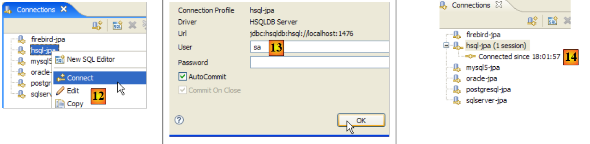 |
- in [12]: Man meldet sich an
- in [13]: Man identifiziert sich
- in [14]: Die Verbindung ist hergestellt
 |
- in [15]: Das Schema [PUBLIC] hat noch keine Tabelle
- in [16]: Die Tabelle [ARTICLES] wird anhand des in Abschnitt 5.4.6 erstellten Skripts [schema-articles.sql] angelegt.
- in [17]: Das Skript wird ausgewählt
 |
- in [18]: das auszuführende Skript
- in [19]: Man führt es aus, nachdem man alle Kommentare entfernt hat, da HSQLB diese nicht akzeptiert.
 |
- Sobald das Skript ausgeführt wurde, wird die Anzeige der Datenbank in [20] aktualisiert
- in [21]: Die Tabelle [ARTICLES] ist vorhanden
- in [22]: ihr Inhalt
Beenden wir den Server HSQLDB und starten wir ihn anschließend neu. Anschließend überprüfen wir die Datei [test.script]:
Man sieht, dass SGBD die verschiedenen Befehle SQL gespeichert hat, die während der vorherigen Sitzung ausgeführt wurden, und dass es diese beim Start der neuen Sitzung erneut ausführt. Außerdem ist zu erkennen (Zeile 2), dass die Tabelle [ARTICLES] im Speicher angelegt wird (MEMORY). Bei jeder Sitzung werden die ausgegebenen Befehle SQL in [test.log] gespeichert, um zu Beginn der nächsten Sitzung in [test.script] kopiert und zu Beginn der Sitzung erneut ausgeführt zu werden.
5.10. Die Apache-Derby- SGBD
5.10.1. Installation
Das SGBD Apache Derby ist unter der URL [http://db.apache.org/derby/] verfügbar. Es handelt sich um ein SGBD, das ebenfalls in Java geschrieben und sehr speicherfreundlich ist. Es bietet ähnliche Vorteile wie HSQLDB. Auch diese Version kann in Java-Anwendungen eingebettet werden, c.a.d, als integraler Bestandteil der Anwendung fungieren und in derselben JVM laufen.
 |
- in [1]: die Download-Seite
- in [2,3]: die aktuellste Version herunterladen
 |
- in [3]: Die heruntergeladene ZIP-Datei entpacken
- in [4]: Der Ordner [db-derby-*-bin], der beim Entpacken entstanden ist
- zu [5]: den Ordner „[bin]“, der das Skript zum Starten des Servers „[db derby]“ und „[6]“ enthält, sowie den Ordner „[7]“ zum Beenden des Servers.
5.10.2. Apache Derby (Db Derby) starten / beenden
Um den Db-Derby-Server zu starten, doppelklicken Sie auf die oben genannte Anwendung [startNetworkServer] [6]:
 |
- in [1]: Der Server ist gestartet. Er wird mit der oben genannten Anwendung [stopNetworkServer] [7] beendet.
5.10.3. JDBC-Treiber für Db Derby
Der JDBC-Treiber für die Derby-Datenbank SGBD befindet sich im Ordner [lib] des Installationsverzeichnisses:
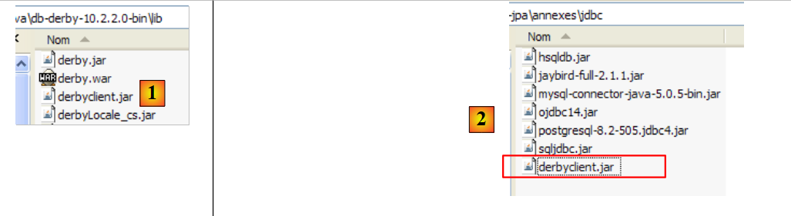 |
- in [1]: Das Archiv [derbyclient.jar] enthält den JDBC-Treiber für SGBD Db Derby
- in [2]: Wir legen dieses Archiv wie die vorherigen (Abschnitt 5.4.7) im Ordner <jdbc> ab
Um diesen Treiber JDBC zu testen, verwenden wir Eclipse und das Plugin SQL Explorer. Der Leser wird gebeten, die in Abschnitt 5.4.7 erläuterte Vorgehensweise zu befolgen. Wir zeigen einige aussagekräftige Screenshots:
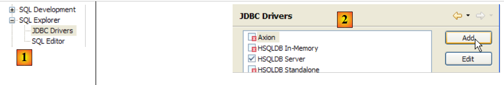 |
- in [1]: [window / preferences / SQL Explorer / JDBC Drivers]
- in [2]: Der JDBC-Treiber von Apache Derby ist nicht in der Liste enthalten. Er wird hinzugefügt.
 |
- in [3]: Wir vergeben einen Namen für den neuen Treiber
- in [4]: Das Format der vom JDBC-Treiber unterstützten URLs wird festgelegt
- in [5]: Das .jar-Archiv des JDBC-Treibers wurde angegeben
- in [5b]: Der Name der Java-Klasse des JDBC-Treibers
- in [5c]: Der JDBC-Treiber ist konfiguriert
Anschließend stellen wir eine Verbindung zum Apache-Derby-Server her. Dieser muss zuvor gestartet werden.
 |
- in [6]: Man erstellt eine neue Verbindung
- in [7]: Man gibt ihr einen Namen
- in [8]: Man möchte eine Verbindung zum Apache-Derby-Server herstellen
- in [9]: die URL der Datenbank, mit der eine Verbindung hergestellt werden soll. Hinter dem Standard-Anfang „[jdbc:derby://localhost:1527]“ wird der Pfad zu einem Ordner auf der Festplatte angegeben, der eine Derby-Datenbank enthält. Mit der Option [create=true] kann dieser Ordner erstellt werden, falls er noch nicht existiert.
- in [10,11]: Man stellt eine Verbindung als Benutzer [jpa/jpa] her. Ich habe mich nicht näher damit befasst, aber es scheint, als könne man beliebige Anmeldedaten (Benutzername/Passwort) eingeben. Hier wird der Eigentümer der Datenbank angegeben, sofern create=true ist.
Man bestätigt die Verbindungskonfiguration.
 |
- in [12]: Man meldet sich an
- in [13]: Man meldet sich an (jpa/jpa)
- in [14]: Man ist angemeldet
 |
- in [15]: Das Schema [jpa] wird noch nicht angezeigt.
- in [16]: Die Tabelle [ARTICLES] wird anhand des in Abschnitt 5.4.6 erstellten Skripts [schema-articles.sql] angelegt.
- In [17]: Das Skript
 |
- in [18]: das auszuführende Skript
- in [19]: Man führt es aus, nachdem man alle Kommentare entfernt hat, da Apache Derby, wie auch HSQLB, diese nicht akzeptiert.
 |
- Sobald das Skript ausgeführt wurde, wird in [20] die Anzeige der Datenbank aktualisiert
- in [21]: Das Schema [jpa] und die Tabelle [ARTICLES] sind vorhanden
- in [22]: Der Inhalt der Tabelle [ARTICLES]
 |
- in [23]: Der Inhalt des Ordners [derby\jpa], in dem die Datenbank angelegt wurde.
5.11. Das Spring 2- -Framework
Das Spring-2-Framework ist unter der URL [http://www.springframework.org/download] verfügbar:
 |
- unter [1]: Man lädt die neueste Version herunter
- unter [2]: Laden Sie die sogenannte „Version mit Abhängigkeiten“ herunter, da sie die .jar-Dateien der von Spring integrierten Drittanbieter-Tools enthält, die Sie ständig benötigen.
 |
- in [3]: Das heruntergeladene Archiv wird entpackt
- in [4]: Der Installationsordner von Spring 2.1
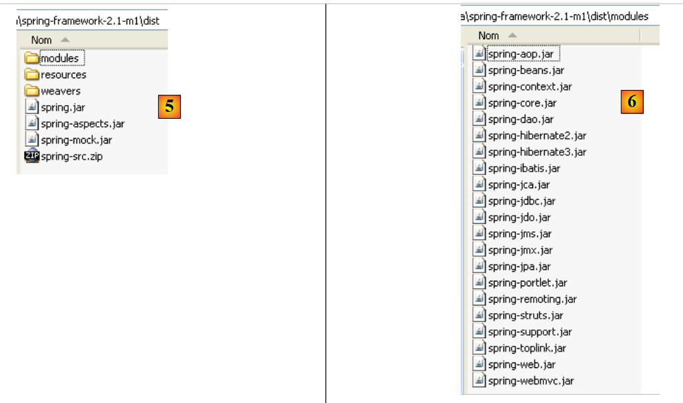 |
- in [5]: Im Ordner <dist> befinden sich die Spring-Archive. Das Archiv [spring.jar] enthält alle Klassen des Spring-Frameworks. Diese sind auch modular im Ordner <modules> unter [6] verfügbar. Wenn man weiß, welche Module man benötigt, findet man sie hier. So vermeidet man es, Archive in die Anwendung einzubinden, die sie nicht benötigt.
 |
- in [7]: Der Ordner <lib> enthält die Archive der von Spring verwendeten Tools von Drittanbietern
- in [8]: einige Archive des Projekts [jakarta-commons]
Wenn im Tutorial Spring-Archive verwendet werden, müssen diese entweder im Ordner <dist> oder im Ordner <lib> des Spring-Installationsverzeichnisses gesucht werden.
5.12. Der Container EJB3 von JBoss
Der Container EJB3 von JBoss ist unter der URL [http://labs.jboss.com/jbossejb3/downloads/embeddableEJB3] verfügbar:
 |
- in [1]: Man lädt JBoss und EJB3 herunter. Man beachte das Datum des Produkts (September 2006), während der Download im Mai 2007 erfolgt. Man kann sich fragen, ob dieses Produkt noch weiterentwickelt wird.
- in [2]: die heruntergeladene Datei
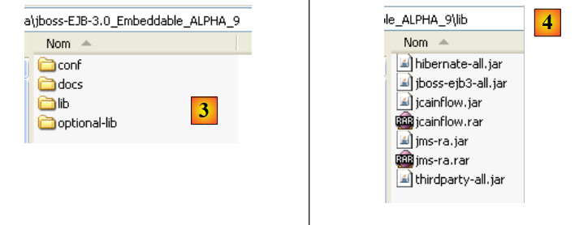 |
- in [3]: die entpackte ZIP-Datei
- in [4]: Die Archive [hibernate-all.jar, jboss-ejb3-all.jar, thirdparty-all.jar] bilden den Container EJB3 aus JBoss. Sie müssen in den Classpath der Anwendung aufgenommen werden, die diesen Container verwendet.